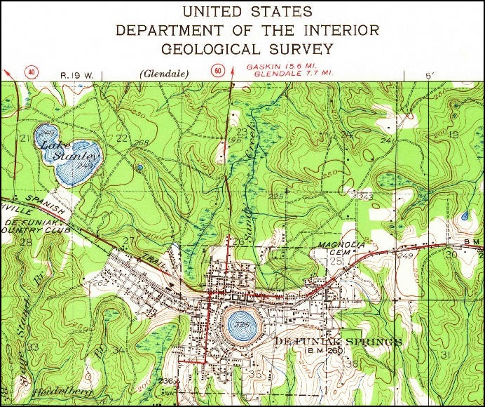
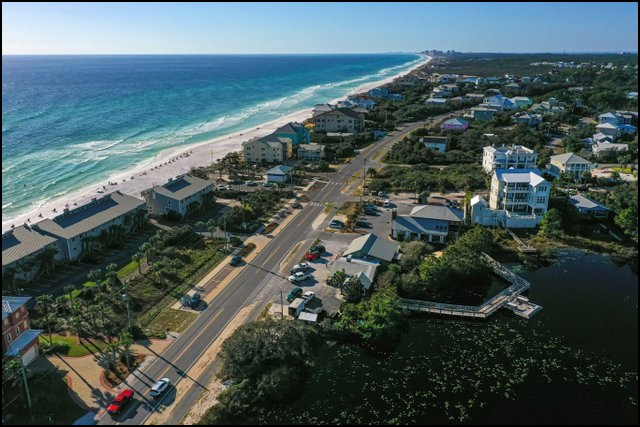
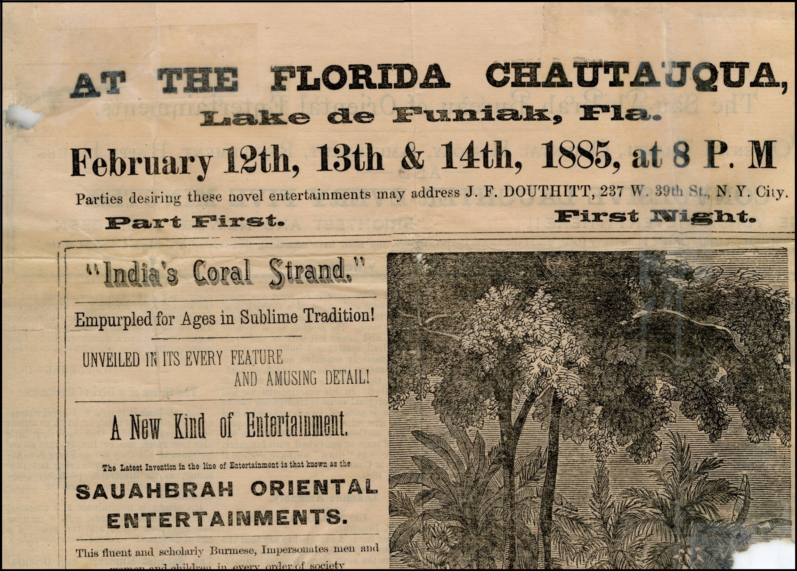
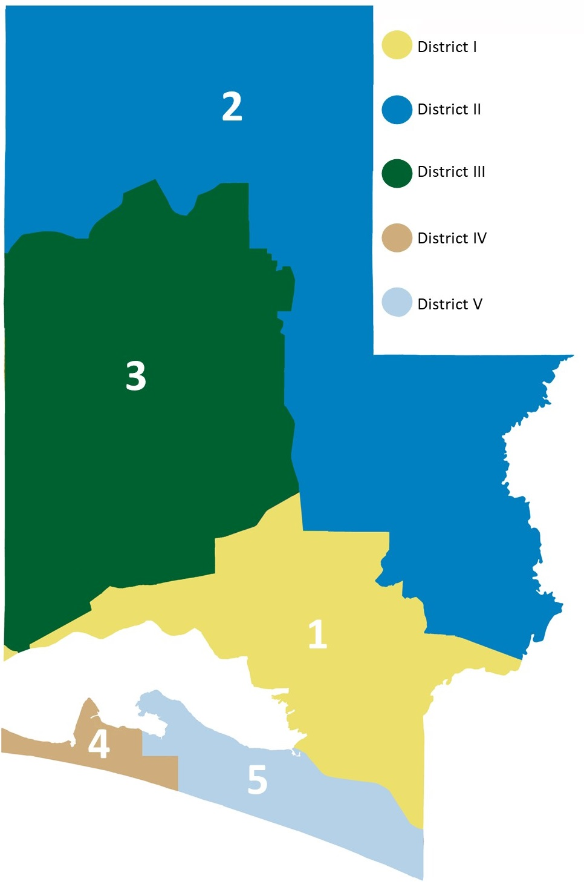
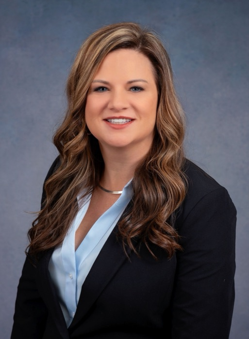
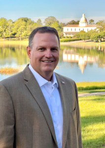
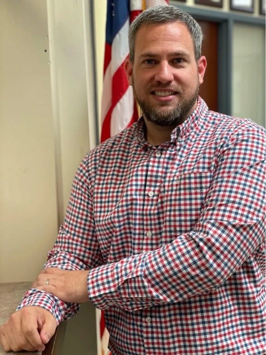
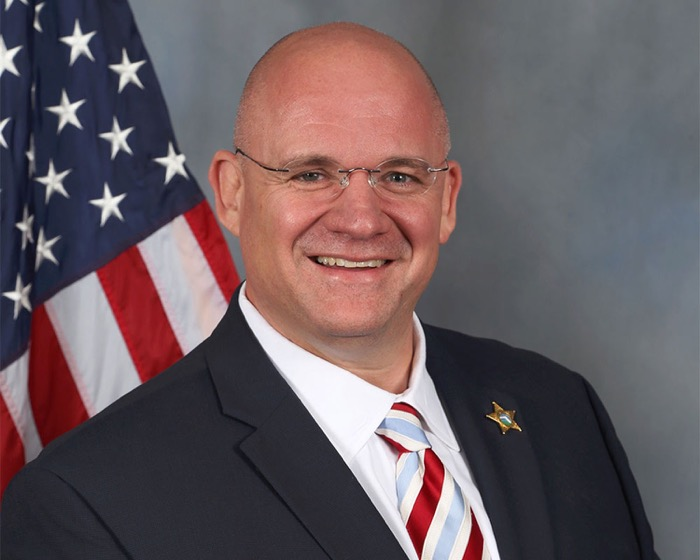
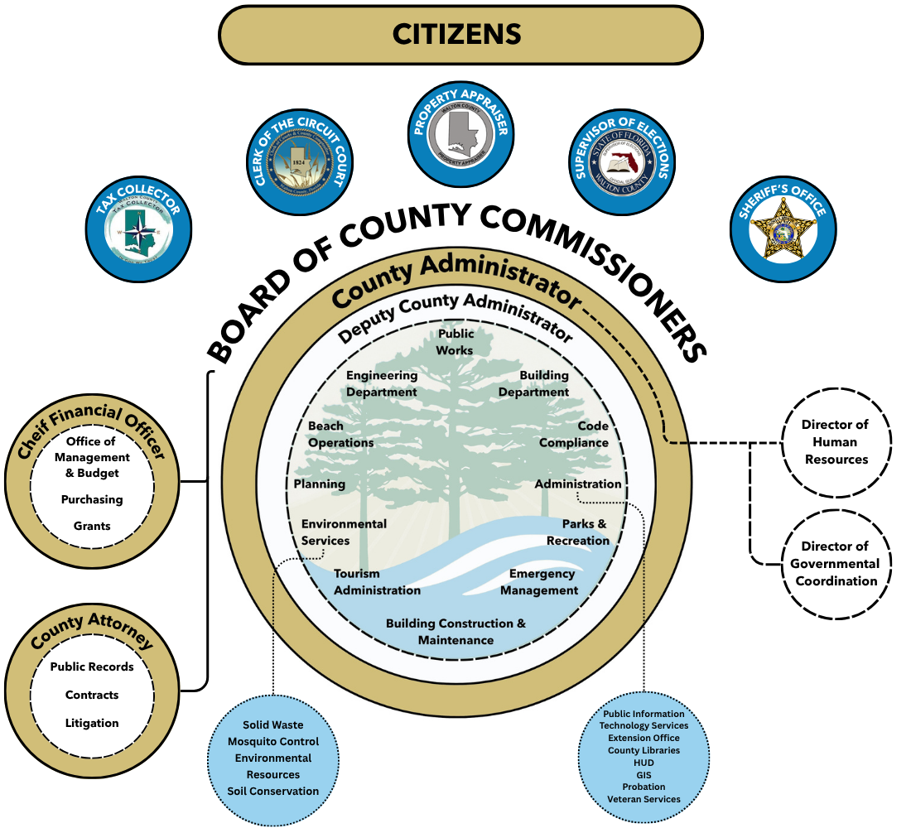

The Government Finance Officers Association of the United States and Canada presented Walton County, Florida with its second consecutive Distinguished Budget Presentation Award for the Annual Budget beginning October 1, 2025.
To receive this award, a government must publish a budget document that meets program criteria as a policy document, a financial plan, an operations guide, and a communications device.
The certificates below recognize the prior-year publication. This FY 2027 Final Budget is prepared according to the current program criteria.
To the Honorable Walton County Board of County Commissioners:
In accordance with Section 129.03(3), Florida Statutes, I am pleased to transmit Walton County’s final budget for Fiscal Year 2027. The adopted plan totals $345.2 million and maintains current services while funding public safety, infrastructure, and the staffing needed to serve a growing county.
The Board’s most consequential decision came at the tentative hearing. It reduced the proposed countywide operating millage from 3.4347 to 3.2500 mills, with an estimated $8,584,562 effect in the tentative-hearing comparison. The final funding schedule uses $8,047,270 of General Fund balance after all revenue updates, while the expenditure plan remains unchanged. This uses accumulated resources, not new recurring revenue. The County will need to monitor reserve use and future recurring costs.
The final budget carries out that decision through four principal commitments:
Maintain current services and fund the Sheriff, other Constitutional Officers, and statutory obligations
Provide $43.8 million for funded capital projects, including roads, drainage, facilities, and other public assets
Add a net 15 positions where the adopted workload plan requires capacity, while funding a 3% cost-of-living adjustment
Preserve a General Fund emergency cushion after the planned use of fund balance
The pages that follow show the revenue assumptions, reserve effects, staffing changes, capital projects, and performance measures behind those commitments.
The Board has adopted a $345.2 million FY 2027 final budget, an increase of $17.3 million, or 5.3%, over the FY 2026 final budget of $327.9 million. The County operating millage rate is reduced to 3.2500 mills, following rates of 3.6000 in FY 2024, 3.5750 in FY 2025, and 3.5190 in FY 2026. County operating property taxes remain the County’s largest revenue source at $151.6 million. Public Safety remains the largest expenditure function at $126.6 million, reflecting the Sheriff’s Office budget and the County’s own public-safety operations.
Fund Highlights
General Fund$81.2M−2.7%
Transportation Fund$30.7M+15.3%
Sheriff (Fine & Forfeiture) Fund$114.1M0.0%
Tourist Development Fund$59.0M+14.5%
Solid Waste Fund$23.1M+4.6%
Capital Projects Fund$27.6M+35.8%
Investing in Our Workforce
The budget includes 1,515 positions, a net increase of 15: 667 Board department positions (up 12) and 848 positions assigned to constitutional officers and the County-funded court position (up 3). Countywide, 1,508 positions are full-time and 7 are part-time. The largest Board department change is in Tourism Beach Operations (up 13), supporting continued Beach Operations and Beach Tram service. The added positions support existing services.
Continuity, Capital Investment and Preparedness
Service continuity. The FY 2027 budget maintains current core services while investing in infrastructure and preserving financial flexibility.
Capital investment. The funded FY 2027 capital program totals $43.8 million. Grant-dependent projects, the Sheriff/Fine and Forfeiture Fund project, and previously funded tourism projects are listed separately in the project inventory.
Financial preparedness. Florida voters are scheduled to consider Amendment 3 in November 2026, which could change the County's taxable property base. The adopted budget uses current law. The County will continue to monitor revenue, reserves, grant awards, service demand, and long-term commitments throughout FY 2027.
I thank the Board for its guidance and County staff for its work developing this final budget.
Melissa Thomason
Chief Financial Officer, Office of Management and Budget
Walton County's budget message, organizational structure, strategic priorities, and community context.
GFOA Distinguished Budget Presentation Award2
Transmittal Letter3
Overview of Walton County9
Organizational Structure12
Strategic Initiatives13
Community Priorities14
Organizational Challenges15
FY 2027 Response16
02Financial Overview
A one-page look at the whole budget, the year-over-year change by department and fund, how a resident's property tax dollar is allocated, and the countywide revenue, expenditure, fund, transfer, and debt ledgers behind it.
Budget in Brief18
How the Budget Works19
How to Read the Financial Schedules20
Consolidated Budget Ledger21
Budget Change Summary23
Revenue Portfolio25
Revenue Strategy26
Revenue Ledger27
Property Tax Allocation Ledger31
Florida Amendment 3 Risk33
Expenditure Ledger34
Fund Financial Ledger37
Interfund Transfer Ledger39
Debt Ledger40
General Fund Reserve Position41
Long-Term Outlook42
03Budget Process
How budget requests became Walton County's FY 2027 final spending plan, including public workshops, hearings, and Board decisions.
OurCounty
A look at Walton County's people, geography, and governance — the
organizational structure, strategic priorities, and community context
behind the FY 2027 budget.
Where natural resources, history, and growth meet.
Walton County is located in northwest Florida, bordered by rivers, forests, lakes, and the Gulf of Mexico. Established in 1824, the county has grown from early timber and agricultural communities into a diverse coastal and inland economy with a strong connection to place.
90,547Population · BEBR, Apr. 1, 2025
44.4Median Age · 2018–2022 ACS
77.7%Homeownership · 2018–2022 ACS
$74,832Median Household Income · 2022 ACS
One county · many communities
A county with two connected stories.
Walton County includes both inland communities rooted in history, agriculture, public service, and small-town civic life, and coastal communities shaped by tourism, conservation, recreation, and the Gulf economy.
The annual budget supports this broad service landscape by funding public safety, transportation, parks, libraries, environmental resources, constitutional offices, and countywide operations.
This balance of rivers, inland communities, and Gulf shoreline has long shaped how Walton County tells its story:
“Lying here, as it were, in the protecting arms of her bounding rivers… with her head resting in the lap of Alabama that says, ‘Here let us rest,’ while the great Mexican Gulf… humbly washes her feet with its gentle waves to make them pure and white like snow.”
From Britton Hill to the Gulf, Walton County’s geography and culture shape the services residents and visitors rely on.

Geographic Features
26 miles of Gulf coastline, coastal dune lakes, forests, wetlands, rivers, and Britton Hill — Florida’s highest natural point.
Landscape

Beach Communities
South Walton and Scenic Highway 30A include distinctive communities, state parks, and natural resources that require careful stewardship.
Coast

Cultural Heritage
Native American communities, early settlement, timber and lumber industries, and the Chautauqua tradition in DeFuniak Springs.
Heritage
Scan to watch
See Walton County in motion.
Scan to watch a short video with additional historical information about Walton County.
County Commission
Walton County operates under a commission-administrator form of government. The Board of County Commissioners sets policy direction and adopts the annual budget, while the County Administrator oversees day-to-day operations and implementation.

Five districts, countywide service.
Each commissioner resides in the district they represent, and commissioners are elected at large by all county voters. Districts One, Three, and Five are elected during presidential election years; Districts Two and Four during midterm years.
The Board establishes public policy through ordinances and resolutions, levies taxes and fees, adopts the annual budget, oversees infrastructure and services, approves expenditures, and appoints members to boards and commissions.
Constitutional Officer budgets are included in the annual budget, while each office operates independently under Florida Statutes and constitutional authority.
Tax CollectorRhonda Skipper

Clerk of Court & ComptrollerCrystal Sconiers

Property AppraiserGary J. Gregor

Supervisor of ElectionsRyan Messer

SheriffMichael A. Adkinson, Jr.
Explore Walton County history · Scan a code to continue
The chart below illustrates the organizational structure of Walton County Government and its accountability to the citizens it serves. Constitutional officers elected directly by voters are displayed beneath the “Citizens” section, reflecting their independent roles within county government.
The Board of County Commissioners provides overall policy direction and oversight through three primary direct reports: the Chief Financial Officer, the County Administrator, and the County Attorney. The Director of Human Resources and the Director of Governmental Coordination report directly to the County Administrator, while other operational departments and service areas are administered through the Deputy County Administrator.

Organization chart in words
Citizens elect the Board of County Commissioners and the Tax Collector, Clerk of the Circuit Court, Property Appraiser, Supervisor of Elections, and Sheriff. The constitutional offices are independently elected.
The Chief Financial Officer oversees the Office of Management and Budget, Purchasing, and Grants.
The County Attorney oversees public records, contracts, and litigation.
The County Administrator oversees the Deputy County Administrator, Director of Human Resources, and Director of Governmental Coordination.
The Deputy County Administrator oversees Public Works, Engineering, Building, Code Compliance, Administration, Parks and Recreation, Emergency Management, Building Construction and Maintenance, Tourism Administration, Environmental Services, Planning, and Beach Operations.
Environmental Services includes Solid Waste, Mosquito Control, Environmental Resources, and Soil Conservation. Administration includes Public Information, Technology Services, Extension, Libraries, HUD, GIS, Probation, and Veteran Services.
Walton County’s annual budget is built around a shared mission, vision, and set of core values — the strategic foundation that connects every department’s programs and services back to a common purpose. These statements reflect the Walton County Strategic Plan 2027–2032.
Our Foundation
Mission
“To provide leadership and exceptional public services that enhance quality of life, foster economic opportunity, and ensure a safe community for all who live, work, and visit our county.”
Our Direction
Vision
“To be a community that inspires trust through excellence, honors our unique heritage, and empowers all residents to thrive.”
The Walton County Strategic Plan 2027–2032 establishes six priority areas. For FY 2027, the Board’s direction is continuity, capital investment, and financial preparedness: maintain core services, address infrastructure needs, and avoid unnecessary recurring commitments while the revenue outlook remains uncertain.
Strategic Priority Areas, FY 2027–FY 2032
1Public Safety and Health
Enhance the well-being of residents and visitors through proactive disaster preparedness, coordinated emergency response, public health initiatives, and strong community partnerships.
2Planned Growth and Infrastructure
Guide long-term development through strategic planning for public facilities, infrastructure expansion, transportation improvements, and responsible growth.
3Environment and Natural Resources
Protect, preserve, and responsibly manage natural lands, wildlife habitats, coastal areas, and bay systems to ensure environmental sustainability for future generations.
4Economic Development and Tourism
Strengthen the local economy by attracting new businesses, supporting existing business, promoting diversified and sustainable tourism, and fostering quality job creation.
5Government and Operational Performance
Deliver efficient, transparent, and accountable governance through strong leadership, fiscal stewardship, innovative technology, and effective public communication.
6Quality of Life
Strengthen community wellbeing through civic engagement, expanded public access to Gulf, bay, and river waterways, and partnerships that support attainable workforce housing.
The priority areas and supporting direction are drawn from the Walton County Strategic Plan 2027–2032.
The County must respond to growing service demand while protecting financial flexibility, coordinating major projects, and maintaining emergency readiness. The FY 2027 plan connects these pressures to specific actions, funding sources, expected results, and review dates.
How the challenges were identified
The County used the Strategic Plan 2027–2032 process, online surveys and public workshops, FY 2027 budget workshops, departmental workload and staffing analysis, capital-condition needs, and the multi-year financial forecast. The review considered both the FY 2027 budget period and the longer strategic and capital horizon through FY 2032.
Who is most affected
Impacts are not uniform. Coastal communities, visitors, and seasonal workers face peak mobility and access pressures; renters, lower-income households, and the essential workforce face housing constraints. Delivery also depends on coordination with municipalities, state and federal agencies, nonprofit partners, and other service providers.
What Is Creating Pressure
Community challengeGrowth, mobility, and aging assets
Population grew 20.2% from 2020 to the April 2025 BEBR estimate, while development and visitation add demand to roads, drainage, facilities, parks, public-safety infrastructure, and coastal access.
Community challengeSeasonal demand and coastal stewardship
Approximately 4.7 million annual visitors intensify peak-season transportation, lifeguard, tram, beach-access, maintenance, and natural-resource demands.
Community challengeHousing affordability and access
Growth in housing cost and demand affects workforce stability and residents seeking rental assistance, attainable housing, and access to essential community services.
Organizational challengeCapacity, asset delivery, and coordination
The County must fill critical positions, coordinate work across departments, and deliver a large capital program without materially expanding core service commitments.
Organizational challengeRevenue uncertainty and recurring cost
Potential property-tax changes, grant uncertainty, and continuing personnel and operating costs require conservative assumptions and limits on new recurring obligations.
Organizational challengeEmergency readiness and financial flexibility
The FY 2025 ACFR reports $58.4 million of unassigned General Fund balance, about 3.77 months of audited expenditures and other uses. The reserve discussion presents GFOA's two-month guideline and the FY 2027 plan using that unassigned balance as its opening assumption.
Expected resultTrack unassigned and unrestricted balances separately from total projected balance and report material impacts.
ReviewFY 2027 monitoring and FY 2028 forecast update
The priority areas and supporting direction are drawn from the Walton County Strategic Plan 2027–2032. Dollar amounts and targets reconcile to the Capital, Workforce, Program and Service, Long-Term Outlook, and department sections of this final budget. Grant-dependent projects are shown separately and are not included in the $43.8 million funded capital program.
FinancialOverview
The County's final financial plan at a glance, followed by the year-over-
year changes, revenue and expenditure portfolios, property-tax allocation,
fund schedules, transfers, debt, and long-term outlook behind it.
Walton County’s FY 2027 final budget maintains core services while lowering the County operating millage to 3.2500, investing $43.8 million in funded capital improvements, and adding targeted workforce capacity. The $345.2 million plan prioritizes public safety, infrastructure, and dependable service in a growing community while preserving long-term financial preparedness.
$1.00Every County budget funding dollar, allocated by source
Property Taxes
$153.0M44¢ of every $1
Tourist Development Taxes
$59.0M17¢ of every $1
Discretionary Sales Surtax
$40.0M12¢ of every $1
Local Government 1/2 Cent Sales Tax
$16.8M5¢ of every $1
Interest & Investment Earnings
$5.3M2¢ of every $1
Indirect Administrative Fees
$4.1M1¢ of every $1
Local Option Fuel Tax
$4.0M1¢ of every $1
State Revenue Share Proceeds
$3.7M1¢ of every $1
Housing Prisoners Revenue
$3.5M1¢ of every $1
Federal Grant - Housing and Urban Development (HUD)
$3.1M1¢ of every $1
Ambulance Fees
$3.0M1¢ of every $1
All Other Sources
$49.8M14¢ of every $1
Displayed cents use the largest-remainder rounding method so the shown amounts add to exactly $1.00.
Where the Money Goes
$1.00Every County budget dollar, allocated by service area
Sheriff's Office
$114.1M33¢ of every $1
Other Officers & Board Office
$33.2M10¢ of every $1
Funded Capital Program
$43.8M13¢ of every $1
Tourism Administration
$29.7M9¢ of every $1
Environmental Services
$23.5M7¢ of every $1
Public Works
$20.8M6¢ of every $1
Beach Operations
$16.1M5¢ of every $1
County Administration Offices
$10.9M3¢ of every $1
Building Construction & Maintenance
$8.6M2¢ of every $1
Planning
$6.8M2¢ of every $1
Code Compliance
$4.8M1¢ of every $1
All Other Departments & Agencies
$32.8M9¢ of every $1
Displayed cents use the largest-remainder rounding method so the shown amounts add to exactly $1.00.
Fund Highlights - Major and Minor Funds
$206.9MGeneral Fund
$114.1MSheriff Fund
$59.0MTourist Development
$40.7MSolid Waste
$30.7MTransportation
$27.6MCapital Projects
$4.0MBuilding
$3.1MHousing & Urban Development
$1.4MMosquito Control
$600KRecreation Plat Fee
$460KE911
$300KSidewalk
$69.6KMosquito State Aid
$43.2KDaughette MSBU
$0Preservation
Fund highlights present gross fund budgets and are not additive to the $345.2 million net expenditure budget. Interfund transfers appear in more than one fund and are eliminated from the net total.
The budget moves through connected stages. Revenue is recorded by source, placed in legally separate funds, and authorized for services, capital, transfers, and reserves.
$324.0MCurrent-year revenue and other sources
$345.2MNet expenditure budget
$143.7MInternal transfers, eliminated from net total
From resources to public services
Property taxes$153.0M
Tourist taxes$59.0M
Sales taxes$56.8M
Other revenue$55.1M
General Fund
Countywide operations, constitutional support, transfers, and shared services.
Restricted funds
Tourism, transportation, solid waste, mosquito control, E911, housing, and other legally limited purposes.
Capital funds
Resources reserved for facilities, roads, safety, recreation, and other long-lived assets.
Operating services
Public safety, transportation, environmental, human, recreation, court, and government services.
Capital investment
$43.8M funded FY 2027 program, plus separately disclosed projects.
Ending balance
Resources not spent in the year remain within their respective funds and restrictions.
Why gross fund budgets exceed the $345.2M net budget
Transfers are recorded once as a use in the sending fund and again as a source in the receiving fund. Gross fund schedules therefore total $488.9M. Eliminating $143.7M of internal transfers produces the $345.2M net expenditure budget.
Each schedule answers a different question. Read them together rather than treating any single total as the whole budget.
StartBudget in Brief
Headline choices, funding sources, service uses, and major fund totals.
ThenRevenue
What resources are expected, how reliable they are, and what restrictions apply.
ThenExpenditures
How spending changes by function, fund, department, and service.
ReconcileTransfers
Which fund supplies resources and which fund receives them.
FinishOutlook
Reserve capacity, recurring commitments, debt, and future capital effects.
Key budget totals
$324.0MRevenue and other sources
Resources expected during FY 2027 before using prior-year fund balance.
$345.2MNet expenditure budget
Countywide service and capital spending after eliminating internal transfers.
$488.9MGross fund schedules
Balanced fund-level sources and uses, including both sides of transfers.
What can and cannot be combined
Can be compared
Current-year revenue plus fund balance brought forward can be compared with the net expenditure budget. Department and program totals can be traced to their supporting fund schedules.
Should not be added together
Gross fund budgets should not be added to the net budget. Restricted tourism, transportation, solid-waste, grant, or assessment balances cannot be treated as generally available cash.
Why the General Fund matters
The General Fund is the County's primary operating fund, but not the entire County budget.
It supports Board operations, constitutional officers, courts, agencies, and transfers. Other funds exist to preserve legal and accounting restrictions. The next schedules retain those fund boundaries so readers can see both countywide totals and the source of each commitment.
Reader checkpoints
Follow the source
Ask whether funding is unrestricted, purpose-restricted, grant-dependent, or supported by a fee.
Follow the transfer
Use the transfer ledger to avoid counting the same resource twice.
Follow the future effect
Look for reserve use, recurring costs, debt, and operating impacts of capital projects.
FY 2027 revenue and expenditures across Walton County's governmental funds, by category. Continued on the next page with the remaining funds and the countywide total.
FY 2027 revenue and expenditures across Walton County's governmental funds, by category. Continued on the next page with the remaining funds and the countywide total.
Continued from the previous page, in the same row order — the remaining Capital Projects, Mosquito Control, and Non-Major Governmental Funds, plus the countywide Total All Funds column. These fund-schedule categories preserve fund reporting; the Revenue Ledger is the control for countywide Uniform Accounting System category totals.
Continued from the previous page, in the same row order — the remaining Capital Projects, Mosquito Control, and Non-Major Governmental Funds, plus the countywide Total All Funds column. These fund-schedule categories preserve fund reporting; the Revenue Ledger is the control for countywide Uniform Accounting System category totals.
A comparison of the FY 2026 and FY 2027 budgets by Constitutional Officer, Independent Agency, Board Department, and capital fund.
$345.2MFY 2027 Final Budget
+$17.3MNet Dollar Change
+5.3%Net Percent Change
+$5.0MLargest Increase: Sheriff Capital
Constitutional Officers and Board Office
Constitutional Officers and Board Office
Department
FY 2026 Budget
FY 2027 Budget
Change
%
Board of County Commissioners
$11,340,758
$11,230,889
-$109,869
-1.0%
Clerk of Court
$5,984,728
$6,871,175
+$886,447
+14.8%
Property Appraiser
$4,829,596
$4,954,338
+$124,742
+2.6%
Supervisor of Elections
$1,615,107
$1,663,865
+$48,758
+3.0%
Tax Collector
$7,900,000
$8,500,000
+$600,000
+7.6%
Walton County Sheriff's Office
$114,116,228
$114,116,228
$0
+0.0%
Total Constitutional Officers and Board Office
$145,786,417
$147,336,495
+$1,550,078
+1.1%
Independent Agencies
Independent Agencies
Circuit Court
$260,511
$261,493
+$982
+0.4%
County Court
$69,956
$70,056
+$100
+0.1%
Court Innovations
$50,000
$80,000
+$30,000
+60.0%
Court Technology - Court Administration
$93,758
$185,436
+$91,678
+97.8%
Medical Examiner
$1,351,698
$881,930
-$469,768
-34.8%
Non-Profit Funding Program
$477,820
$268,500
-$209,320
-43.8%
Public Defender
$152,439
$290,833
+$138,394
+90.8%
South Walton Fire
$919,693
$947,284
+$27,591
+3.0%
State Attorney
$260,633
$297,111
+$36,478
+14.0%
Statutory & Other
$3,109,643
$3,502,844
+$393,201
+12.6%
Walton County Health Department
$1,724,397
$1,724,397
$0
0.0%
Daughette MSBU
$43,225
$43,225
$0
0.0%
State Fire
$32,790
$32,790
$0
0.0%
Guardian Ad Litem
$9,000
$9,000
$0
0.0%
Total Independent Agencies
$8,555,563
$8,594,899
+$39,336
+0.5%
Medical Examiner: The $469,768 decrease reflects facility funding included in FY 2026 that does not recur in FY 2027.
Court budgets: Public Defender funding includes $91,270 in IT salary reimbursements. Court Administration includes $120,678 in salaries and benefits; its $300,000 FY 2026 equipment appropriation is shown under capital.
Board of County Commissioners: The $12,935,889 office budget comprises $11,230,889 shown here, including $400,000 contingency and $5,000 grants, plus $1,705,000 capital. Sheriff comparisons use the amended FY 2026 budget.
Board Department Total: Board department totals include operating and personnel costs; capital is listed separately. Department profiles include their capital items. Total Capital of $53.50M comprises the $43.80M Capital Improvement Plan, $7.12M in machinery, vehicles, and equipment, and $2.58M in debt service.
Countywide property taxes total $153.0M (44%): the $151.6M main levy is generally available and the $1.4M Mosquito Control levy is dedicated to that fund. The next largest sources are the state-restricted Tourist Development Tax ($59.0M) and Discretionary Sales Surtax ($40.0M).
$345.2MTotal Budget Funding
$324.0MCurrent-Year Revenue & Other Sources
$21.3MFund Balance Brought Forward
$97.6MEstimated Visitor-Paid
Concentration of the revenue portfolio
Property tax 44%TDT 17%Sales taxes 17%Other 22%
Major source
FY 2027
Share
Budget change
Restriction
Reliability
Control
Trend
Property Taxes
$153.0M
44%
-2.6%
Mixed
Recurring
Moderate
Down
Tourist Development Taxes
$59.0M
17%
+16.0%
State restricted
Recurring
Limited
Actuals stable
Discretionary Sales Surtax
$40.0M
12%
+0.8%
Unrestricted
Recurring
Low
Flat
Local Government 1/2 Cent Sales Tax
$16.8M
5%
-1.4%
Unrestricted
Recurring
Low
Flat
Interest & Investment Earnings
$5.25M
2%
-14.1%
Mixed
Rate-sensitive
Low
Down
Indirect Administrative Fees
$4.11M
1%
+19.5%
Unrestricted
Recurring
Low
Up
Local Option Fuel Tax
$4.01M
1%
+6.3%
Restricted
Recurring
Low
Up
State Revenue Share Proceeds
$3.73M
1%
+12.9%
Unrestricted
Recurring
Low
Up
Housing Prisoners Revenue
$3.50M
1%
0.0%
Restricted
Recurring
Low
Flat
Federal Grant - Housing and Urban Development (HUD)
$3.06M
1%
-0.8%
Restricted
Grant-dependent
Low
Down
Ambulance Fees
$3.00M
1%
0.0%
Restricted
Recurring
Low
Flat
Classification guide
Restriction
Whether law, grant terms, levy, fee or fund purpose limits how receipts may be spent.
Reliability
Whether the source is expected annually, economically sensitive, rate-sensitive or dependent on an award.
County control
The practical ability to change the rate or base; it does not indicate forecast certainty.
Flexibility and who bears the burden
Visitors & consumers
~$97.6M (28% of FY 2027 budget funding) is visitor-paid through TDT and a visitor share of sales-tax collections.
Property taxpayers
The combined $153.0M levy includes $151.6M of main ad valorem tax and $1.4M for Mosquito Control; an estimated $134.5M is residential and $18.5M commercial.
Eleven largest sources
$215.7M is generally available, $74.0M is restricted, and $5.25M is mixed. The remaining $50.3M is source- and fund-specific, including fund balance brought forward.
The TDT +16.0% is a budget-to-budget comparison, not growth in the tax rate or actual collections. FY 2025 ACFR collections were approximately $60.33M; the FY 2027 estimate is $58.97M. Visitor-paid revenue uses full TDT plus 68% of surtax and Half-Cent Sales Tax. Property estimates use the taxable-value split; $1.4B of exempt value across 22,329 homestead parcels forgoes an estimated $4.5M in county levy.
The budget documents the principal revenue estimating methods and explains material changes from the prior-year budget.
$345.2MTotal Budget Funding
$324.0MCurrent-Year Revenue & Other Sources
$17.3MIncrease in Total Funding
FY 2027 estimating methods
Property tax
Certified taxable value, the final 3.2500-mill countywide rate, the Mosquito Control levy, and expected collections.
Tourist Development Tax
Recent collections and lodging activity. The $58.97M estimate is below FY 2025 ACFR collections of approximately $60.33M.
Sales and fuel taxes
State and local estimates, statutory distributions, recent receipts, and economic trends.
Charges, permits and fees
Adopted rates, expected service or permit volume, program information, and collection history.
Intergovernmental and grants
Allocation notices, executed or reasonably anticipated awards, and program eligibility.
Interest and other sources
Investable cash, expected rates, identifiable officer returns, and asset sales.
What explains the largest budget changes?
TDT budget restored to expected collections
The $8.12M increase is measured against an FY 2026 budget that the Tourist Development Council intentionally reduced while the tax remained imposed. It does not represent a tax-rate increase or growth over FY 2025 actual collections.
Property tax
The main ad valorem budget falls $4.11M, reflecting the final millage decision.
Fees and identifiable receipts
Short-Term Rental Certificate Fees rise $900K, Recreation Plat Fees add $600K, and surplus-equipment sales rise $476K based on source-specific estimates.
Variable resources
Interest falls $810K. The budget includes $5.25M of interest and investment earnings, at least $3.23M of grant allocations, and $876K of equipment sales; these should not support permanent recurring commitments without continued review.
Accounting crosswalk: total funding of $345.2M equals $324.0M of current-year revenue and other sources plus $21.3M of fund balance brought forward. The planning portfolio groups $38.7M of service-related receipts; the controlling Uniform Accounting System ledger classifies $20.0M as Charges for Services and approximately $18.7M in other accounting categories. Out-year growth assumptions apply after the FY 2027 base is established.
Walton County's revenue is organized into seven categories under Florida's Uniform Accounting System — from locally levied taxes and charges for services to state and federal intergovernmental revenue. Figures below span six fiscal years to show the trend behind each FY 2027 total; the following page details every individual revenue source within each category.
$345.2MTotal FY 2027 Budget Funding
+$17.3MNet Change from FY 2026
+5.3%Net Percent Change
$151.6MMain Ad Valorem Levy
Consolidated Revenue Summary
Consolidated Revenue Summary
Revenue Category
FY 2022 Actual
FY 2023 Actual
FY 2024 Actual
FY 2025 Actual
FY 2026 Budget
FY 2027 Final
General Government Taxes
$218,598,479
$236,486,085
$257,566,876
$277,454,100
$272,677,953
$277,164,221
Charges for Services
$14,601,788
$15,616,872
$14,403,343
$15,251,527
$19,414,205
$19,985,657
Other Sources
$4,187,992
$5,229,704
$5,905,994
$6,043,333
$14,848,284
$25,309,776
Permits Fees and Special Assessments
$3,620,226
$4,265,672
$5,974,512
$7,032,365
$6,004,785
$7,783,225
Miscellaneous Revenue
$4,876,217
$9,049,742
$14,414,808
$13,398,132
$7,862,612
$7,448,151
Intergovernmental Revenues
$6,686,791
$7,336,263
$11,070,692
$9,427,484
$6,896,622
$7,304,978
Judgments, Fines and Forfeits
$170,388
$350,704
$280,208
$287,597
$240,627
$227,500
Total Budget Funding
$252,741,882
$278,335,039
$309,616,429
$328,894,534
$327,945,088
$345,223,508
Reading This Table
These are the controlling Florida Uniform Accounting System category totals. General Government Taxes includes the $151.6M main Ad Valorem levy, $1.4M Mosquito Control levy, Tourist Development Tax, discretionary surtax, and Local Government Half-Cent Sales Tax. Combined countywide property taxes are $153.0M.
See every revenue source in detailScan to open the online Revenue Ledger, with year-over-year detail, restriction, and control information for each of the 89 individual sources summarized here.
How Walton County’s share of a property tax bill is distributed across Constitutional Officers, Independent Agencies, Capital projects, and Board Departments. The North Walton Mosquito Control District, a separate taxing district with its own millage rate, is stated separately.
Total Countywide Ad Valorem Allocation$151,592,125
North Walton Mosquito Control District
$1,426,937
0.93%
Total Ad Valorem Allocation (All Funds)
$153,019,062
What This Means for a Homeowner
On a home assessed at $250,000 with the maximum standard 2026 non-school homestead exemption of $51,411 ($198,589 in taxable value), the County’s FY 2027 final millage of 3.2500 generates the County portion of the tax bill below, split across recipients in the same proportions as above:
$645.41Total County portion of the tax bill
Scan for Your PropertyEnter an address for a customized County tax breakdown.
Sheriff's Office
64.65%
$417.26
Sheriff Projects
4.62%
$29.80
Transportation and Infrastructure
6.59%
$42.53
Clerk of Court
4.53%
$29.25
Property Appraiser
3.27%
$21.09
Board of County Commissioners
3.08%
$19.89
Tax Collector
2.94%
$18.94
All Other Entities
10.33%
$66.65
2026 homestead amount: Florida Department of Revenue, 2026 NAL exemption codes. Allocations use displayed shares, with rounding assigned to All Other Entities. This is an illustrative example of the County-government portion of a tax bill only; it excludes the separate levies of the School Board, Northwest Florida Water Management District, and the North Walton Mosquito Control District that also appear on an actual property tax bill. The County government’s share is calculated as taxable value × millage ÷ 1,000, then apportioned by each entity’s share of total Ad Valorem revenue.
Florida Amendment 3: A Material Property-Tax Uncertainty
Revenue Risk
Florida Amendment 3: A Material Property-Tax Uncertainty
Florida voters are scheduled to consider Amendment 3 in November 2026. The measure could materially change the taxable base and the permitted use of county property-tax revenue during the planning horizon.
If voters approve the amendment
The non-school homestead exemption would increase to $150,000 in 2027 and $250,000 in 2028, then adjust for inflation. The annual assessment-growth cap for non-homestead property would decrease from 10% to 5%.
County budget exposure
Property tax is the County's largest revenue source at $153.0 million, or 44% of FY 2027 budget funding. A smaller taxable base could constrain future recurring revenue or require service, rate, capital, and reserve decisions.
What remains uncertain
Voter decision
The amendment is not incorporated as an enacted change in this final budget. It requires voter approval.
Local fiscal effect
The parcel-level and fund-level revenue effect will depend on implementation, taxable values, exemptions, and future millage decisions.
Timing
The amendment states an effective date of January 1, 2027; the County will update its forecast as implementation guidance becomes available.
Planning response
MonitorBallot
Track the November 2026 outcome and implementing guidance.
ModelExposure
Estimate taxable-value and revenue effects by fund.
TestScenarios
Compare service, capital, reserve and millage options.
Official Florida ballot information
Scan for the Florida Division of Elections summary and full text. This publication presents the measure as a risk, not as an approved policy change.
constitutionalinitiatives.dos.fl.gov - Ballot 3, Election Year 2026
Walton County's expenditures are organized into nine functional classifications reflecting the full range of services provided to residents and visitors — from general government operations and public safety to infrastructure, tourism, and community programs. Figures below span six fiscal years to show the trend behind each FY 2027 total.
Board of County Commissioners: The Board's $12,935,889 total is classified as $12,435,889 General Government, $100,000 Culture and Recreation, and $400,000 Other Uses.
Summary schedules outlining revenues, expenditures, and fund balances for each fund, consistent with the Florida State Uniform Accounting System Manual for Local Governments. FY 2027 uses the FY 2025 audited unassigned General Fund balance as its opening assumption. Other funds retain their total balance basis. The next page details each fund's FY 2027 schedule.
General Fund balance basis: The $58,393,573 beginning balance is the FY 2025 audited unassigned balance used as the FY 2027 opening assumption. After $8,047,270 of planned use, the estimated remaining balance is $50,346,303.
Project allocations: Ending balances shown here do not deduct existing Board allocations for projects. The amount available for other uses may therefore be lower. The Board may release or reallocate project funding as priorities change or emergencies arise, subject to funding restrictions and existing commitments.
Both sides of each planned FY 2027 budget transfer between County funds — which fund provides the resources and which fund receives them. Every dollar transferred out is matched by a dollar transferred in; the two tables below total the same $143,663,984. The $2,581,997 debt-service path moves Small County Surtax revenue from the Solid Waste Fund to the General Fund, then to the Capital Projects Fund for payment.
General Fund$125.6M
Solid Waste Fund$17.6M
E911 Fund$0.46M
›
Sheriff Fund$98.5M
Capital Projects Fund$27.6M
Transportation Fund$15.0M
General Fund$2.6M
Arrows summarize the direction of internal support. The ledgers below remain the controlling detail and show every matching transfer-out and transfer-in entry.
Interfund Transfers Out
Interfund Transfers Out
Fund (Transferring Out)
Description
Amount
E911 Fund
E911 Revenue to Sheriff
$460,000
General Fund
Property Tax (Sheriff)
$98,004,256
General Fund
Small County Surtax Debt Payment
$2,581,997
General Fund
Property Tax (Capital)
$25,035,734
Solid Waste Fund
Small County Surtax - Debt Service
$2,581,997
Solid Waste Fund
Small County Surtax (Mossy Head Wastewater Treatment)
Walton County's only long-term debt consists of a $27,000,000 Note Payable issued in 2015 and a $2,500,000 Revenue Promissory Note issued in 2020. Both notes funded public improvements, most notably the Broadband project. Together, $9.2M in remaining debt service, including principal and interest, is outstanding. FY 2027 debt payments are budgeted from the infrastructure portion of the County's one-cent Small County Surtax and are scheduled to end in FY 2030.
$29.5MTotal Debt Issued
$9.2MRemaining Debt Service
$2.58MFY 2027 Final Budget
FY 2030Scheduled Payoff
Debt Service Declines to Final Payoff
$2,581,9972027
$2,507,8242028
$2,522,7862029
$1,618,9912030FINAL PAYMENT
Scheduled Principal and Interest — Capital Projects Fund
Scheduled Principal and Interest — Capital Projects Fund
Year Ending September 30
Principal
Interest
Total
2027
$2,313,077
$268,920
$2,581,997
2028
$2,310,881
$196,943
$2,507,824
2029
$2,399,115
$123,671
$2,522,786
2030
$1,571,648
$47,343
$1,618,991
Total
$8,594,721
$636,877
$9,231,598
FY 2027 Final Debt-Service Budget
The Capital Projects Fund includes $2,581,997 for debt service, funded through Small County Surtax transfers.
Why So Little Debt?
Walton County funds the large majority of its capital program on a pay-as-you-go basis from current revenues and legally restricted funding sources rather than borrowing — see the Capital Improvement Plan chapter for how the County determines the level of capital spending and when debt is used. This conservative approach preserves borrowing capacity for future needs and keeps debt service to a small share of the annual budget.
The GFOA two-month guideline is the reserve reference shown here. Reserve capacity is measured using the audited unassigned balance.
$58.4MFY 2025 audited unassigned balance
$31.0MTwo-month reference using FY 2025 audited spending
3.8Months represented by audited unassigned balance
GFOA guidance and the audited comparison
2 monthsGFOA recommended minimum
GFOA recommends unrestricted budgetary General Fund balance of at least two months of regular operating revenues or expenditures. This is a professional guideline; the County has not adopted it as a reserve target.
$58.4MAudited unassigned balance
The FY 2025 ACFR reports $58.4M of unassigned balance and $185.9M of expenditures and other uses. Using that audited spending base produces a $31.0M two-month reference; unassigned balance represents about 3.8 months.
The comparison uses FY 2025 audited spending. GFOA guidance uses regular operating revenues or expenditures, including recurring transfers and excluding unusual one-time items.
FY 2027 General Fund plan
$58.4MFY 2027 opening unassigned assumption
$8.0MFY 2027 planned use of fund balance
$50.3MFY 2027 estimated remaining balance
The General Fund plans to use $8.0M of accumulated fund balance in FY 2027, included in the $21.3M countywide total below.
Where the countywide FY 2027 draw occurs
Fund
Planned fund-balance use
General Fund
$8.0M
Transportation Fund
$4.9M
Fine & Forfeiture / Sheriff Fund
$4.1M
Building Fund
$4.0M
Sidewalk Fund
$0.2M
Countywide total
$21.3M
Balance basis: The FY 2025 audited unassigned balance is used as the FY 2027 opening assumption, with the planned draw charged against it. Sources: FY 2025 ACFR; FY 2027 Fund Financial Ledger; GFOA, Fund Balance Guidelines for the General Fund.
This chapter brings together Walton County's multi-year forecast, five-year capital plan, debt schedule, and the economic conditions that affect them.
Economic Conditions Driving the Outlook
Walton County's budget planning happens against a backdrop of sustained population and visitor growth, detailed further in the Statistical & Supplemental Information section of this book.
+20.2%Population Growth, 2020–2025 (BEBR)
90,547Population Estimate (BEBR, Apr. 1, 2025)
4.7MAnnual visitors, 2025 tourism report
A Declining Operating Millage, Even as the County Grows
The Board reduced the countywide operating millage in each of the last three budget cycles, from 3.6000 mills in FY 2024 to 3.2500 mills in FY 2027. Current-year sources and accumulated fund balance together support the adopted plan. The adopted plan includes operating expenses, capital investments, and transfers between funds.
3.6000
FY 2024
3.5750
FY 2025
3.5190
FY 2026
3.2500
FY 2027
The countywide operating millage has fallen from 3.6000 mills in FY 2024 to a final 3.2500 mills in FY 2027 — a reduction of 9.7% — while the final budget adds a net 15 FTE and funds $43.8M in capital projects. The tentative-hearing comparison estimated an $8.6M revenue effect from lowering the rate; the final funding schedule budgets $8.0M of General Fund balance brought forward after all revenue updates.
The Multi-Year Financial Forecast
The Fund Financial Ledger and this table use the same Consolidated Fund Financial Schedule. That schedule extends through FY 2029. The separate six-major-fund Forecast Explorer uses fund-specific assumptions and the capital project schedule through FY 2031; it is not the same countywide projection.
Consolidated, All Funds
FY 2026 Budget
FY 2027 Final
FY 2028 Proj.
FY 2029 Proj.
Beginning Fund Balance
$435.9M
$408.3M
$387.0M
$350.7M
Total Revenue & Other Sources
$466.2M
$467.6M
$467.3M
$469.9M
Total Expenditures & Other Uses
$468.3M
$488.9M
$503.6M
$518.7M
Change in Fund Balance
−$2.2M
−$21.3M
−$36.3M
−$48.7M
Estimated Ending Fund Balance
$433.7M
$387.0M
$350.7M
$302.0M
Amounts are rounded to $0.1 million. From FY 2027, the General Fund uses its FY 2025 audited unassigned balance as the opening assumption; other funds retain total balances. FY 2028 and FY 2029 roll forward from the preceding projected closing balance.
A Trend Worth WatchingThe consolidated budget plans a $21.3M countywide use of fund balance in FY 2027 across operating, capital, and restricted funds, including $8.0M in the General Fund. This schedule projects further decreases of $36.3M in FY 2028 and $48.7M in FY 2029 as spending and transfers outpace revenue growth. These are projections under the schedule's assumptions, not current-year funding shortfalls.
Projected spending and transfers exceed revenue in FY 2028 and FY 2029, reducing the balances available for future needs. Continued use of accumulated resources would limit financial flexibility and should be considered when evaluating recurring commitments and future capital projects. See General Fund Reserve Position on page 41 for the current reserve comparison.
Recurring Commitments and Annual Monitoring
What FY 2027 CommitsCountywide personnel cost rises $8.49M. Drivers include a net 15-FTE increase, a 3% cost-of-living adjustment ($1.19M Board wage impact), a 5% health-premium increase ($423,319 County impact), and other pay and benefit changes. These costs, contracts, and operation of new or expanded assets continue unless changed through a later budget.
What Remains to Be EstimatedCapital ledgers identify whether operating effects are absorbed, immaterial, ongoing, or pending. Maintenance and operating costs marked pending — especially for future phases or newly selected projects — must be estimated before later funding decisions.
Deferred and Contingent ItemsNo major project in the funded $43.8M FY 2027 capital program was postponed. Outside that total are $15.3M of grant-dependent projects, $2.0M of Sheriff projects funded separately, and $10.25M of prior-funded tourism work that remains active. A $600,000 recreational-plat allocation and $300,000 sidewalk allocation await project selection. Future phases and costs shown as pending are not assumed funded.
Debt Payoff and Future Commitments
The County's existing debt is scheduled to be paid off in FY 2030, reducing future debt-service commitments. See the Debt Ledger on page 40 for payment amounts and funding details.
The Five-Year Capital Outlook
FY 2027–FY 2031 final plan, from the Capital Improvement Plan chapter
$43.8M
FY27
$42.7M
FY28
$36.1M
FY29
$43.2M
FY30
$35.3M
FY31
The plan moves from $43.8M in FY 2027 to $35.3M in FY 2031, with a temporary rise to $43.2M in FY 2030. These projected years do not include grant-funded projects or prior-year projects that may be rebudgeted, which are excluded throughout.
Sensitivity and Forecast AccountabilityThe base forecast uses the published revenue assumptions and assumes no specific Amendment 3 reduction. Downside triggers include tax-law changes, weaker sales or tourism activity, grant delays, claims, capital timing, and hiring results. Monitoring revenue, expenditures, capital timing, and ending balances helps the Board assess service levels, capital priorities, reserves, and millage options as conditions change.
BudgetProcess
How budget requests became Walton County's FY 2027 final spending
plan, including the public workshops, tentative hearing, final hearing, and
Board decisions that shaped adoption.
See how a department request becomes Walton County’s FY 2027 final spending plan — and how residents can follow the decisions before final adoption.
Four PhasesFrom Department Requests to Adoption
Phase 1
Preparation
Departments prepare operating and capital requests identifying service needs, staffing, projects, funding assumptions, and proposed service changes.
February–April
Phase 2
Review
OMB and County Administration evaluate requests, reduction options, revenue estimates, fund capacity, policy guidance, and the Board's strategic priorities on pages 13–14.
April–June
Phase 3
Review & Workshops
Staff review continues in June; public Board workshops in July address funding requests, service levels, strategic priorities, and the proposed millage rate.
June–July
Phase 4
Adoption
Required public hearings are held before the Board adopts the final millage rate and annual operating budget.
September
Who Does WhatA Collaborative Process
Departments & Constitutional Offices
Define service needs and submit operating, personnel, and capital requests.
Office of Management & Budget
Coordinates the cycle, reviews submissions, balances resources, and prepares recommendations.
County Administration
The County Administrator aligns OMB's recommendations with Board priorities and capacity.
Board of County Commissioners
Five elected commissioners set direction, weigh public input, and adopt the final budget and millage rate.
Public Input Is Part of the Process
Residents can review proposals and speak before final decisions are made. Meeting notices and agendas provide the most current participation details.
Request GuidanceWhat Board Departments Were Asked to Provide
Each department completed the same budget request form. Departments were also directed to keep services at their current level and to identify any area where spending could be reduced.
Department Overview
Function and Goals
A description of what the department does and the goals it is working toward.
Performance
Performance Measures
Workload and service-level measures that show what the department delivers.
Context
Challenges and Accomplishments
Challenges, issues, and opportunities facing the department, along with its accomplishments.
Proposed Budget
Expenditure Changes
An explanation of any change in expenditures from the prior year.
Proposed Budget
Staffing Changes
Any requested additions, reductions, or changes to positions.
Proposed Budget
Revenue Changes
Any change expected in revenues the department generates or receives.
Equipment
Machinery and Equipment
Requested vehicles and equipment, with confirmation that Fleet Maintenance reviewed the request.
Additional Information
Pertinent Information and Documents
Any other information relevant to the request, plus supporting documents.
Budget Direction
Keep Services Constant; Identify Reductions
Departments were told to hold services at current levels and to point out any area that could be reduced, so reviewers could weigh options.
OMB and County Administration reviewed requests against available resources, adopted financial policies, and the Board priorities on pages 13–14. Public comments and budget effects are documented on page 48.
After AdoptionThe Work Continues All Year
Monitor
Track Performance
Departments and OMB monitor revenues, spending, appropriations, and operational needs throughout the fiscal year.
Control
Stay Within Authority
Fund-level budgetary control keeps total appropriations within the limits approved by the Board.
Amend
Respond to Change
The Board may amend the budget by resolution for grants, carry-forward funding, contingencies, or unforeseen needs.
Walton County offered four public budget workshops before the statutory hearings, where the Board began the formal adoption process and set the tentative millage recorded below.
July 7Freeport
10:00 a.m. public budget workshop.
July 14DeFuniak Springs
10:00 a.m. public budget workshop.
July 21Paxton
10:00 a.m. public budget workshop.
July 28South Walton
10:00 a.m. public budget workshop.
Public comment and budget effect
What residents discussed
Public participation was concentrated at the July 28 workshop. Comments and concerns addressed beach renourishment and shoreline protection, South Walton parking and congestion, lifeguard services, nonprofit and community-service funding, health and senior services, and capital-project priorities. No single appropriation change is attributed solely to an individual comment.
Decision at the tentative hearing
At the September 14 tentative budget hearing, the Board lowered the countywide operating millage from 3.4347 to 3.2500. The tentative-hearing comparison estimated an $8,584,562 revenue effect. The final funding schedule budgets $8,047,270 of General Fund balance after all revenue updates, with the $345.2 million expenditure plan unchanged. Fund balance is accumulated resources, not new recurring revenue.
How Community Priorities Shaped the Budget
The Board of County Commissioners developed the Walton County Strategic Plan 2027–2032 through strategic-planning workshops and community engagement, including online surveys and public workshops. The priorities identified through that process were considered alongside comments received during the FY 2027 public budget workshops and the tentative and final budget hearings. Together, this information helped the Board evaluate funding requests, service levels, capital investments, and the final millage and budget decisions.
How participation worked
Notify
Formal meeting notices, the County website calendar, PIO email news alerts, and social media alerts promoted the workshops and public-comment opportunities.
Participate
The Office of Management and Budget, County Administration, Constitutional Officers, the Board of County Commissioners, and members of the public participated in the process.
Consider
Comments received at the statutory budget hearings were considered by the Board before final adoption.
Review the public record
Scan to open Walton County's official 2026 meeting document center, which includes the July 7, 14, 21 and 28 budget workshop materials and available records.
Statutory Budget Hearing Dates
September 14 - tentative hearing
The Board reduced the operating millage to 3.2500, lowered property-tax revenue, and used General Fund balance to maintain the expenditure plan.
September 28 - final hearing
After public comment, the Board adopted the $345.2M FY 2027 final budget and a 3.2500-mill countywide operating rate.
Walton County’s Financial Policies establish the framework for sound fiscal management and responsible stewardship of public resources. They guide the Board of County Commissioners in evaluating current operations, planning for future needs, and making informed financial decisions that support the County’s strategic objectives — promoting long-term financial stability, transparency, accountability, and consistency in budgeting practices.
ObjectivesWhat the Policies Are Meant to Achieve
Fiscal Responsibility
Promote prudent fiscal planning and support the long-term financial health of Walton County through responsible management of public resources.
Long-Term Financial Planning
Provide clear direction to County staff in managing the County's finances, developing and adopting budgets, and ensuring the efficient and effective delivery of public services.
Legal Compliance & Governance
Ensure compliance with applicable Florida Statutes, County ordinances, and recognized best practices established by the Government Finance Officers Association (GFOA).
Transparency & Accountability
Promote transparency, accountability, and consistency in financial decision-making and budgeting practices.
Service Delivery
Support sustainable service delivery while preserving the County's financial stability for future generations.
Adopted by the Board of County Commissioners
Each policy summarized on the following page has been formally adopted by the Board and is administered by the Office of Management and Budget. Full policy documents are available from Walton County at co.walton.fl.us.
Nine adopted policies govern how Walton County safeguards, invests, allocates, and reports on public funds.
Fund Balance Policy
Establishes guidelines for maintaining adequate fund balances to support financial stability, liquidity, emergency preparedness, investment-grade credit ratings, and long-term fiscal sustainability.
Scan to View
Budget Policy
Provides the framework for preparing, adopting, and administering a balanced budget in accordance with Florida law, promoting long-term planning and fiscal accountability.
Scan to View
Cash Handling Policy
Establishes internal controls and accountability measures for the receipt, safeguarding, deposit, and management of County funds.
Scan to View
Grants Administration
Provides guidance for the administration, monitoring, and reporting of grant-funded activities to ensure compliance and maximize the effective use of external funding.
Scan to View
Budget Transfers and Amendments
Establishes procedures for budget transfers and amendments in accordance with Florida Statutes, ensuring transparency and appropriate authorization of budget changes.
Scan to View
Capital Asset Policy
Provides standards for the acquisition, capitalization, inventory, maintenance, and disposal of County assets.
Scan to View
Anti-Fraud and Whistleblower Policies
Promote ethical conduct and accountability by establishing procedures for reporting suspected fraud, waste, abuse, or misconduct.
Scan to View
Investment Policy
Establishes guidelines for investing County funds with emphasis on safety, liquidity, diversification, and yield while preserving principal.
Scan to View
Indirect Administrative Cost Allocation Policy
Provides a methodology for allocating indirect administrative costs among County programs, ensuring equitable cost recovery.
ConstitutionalOfficer Budget
A statement of function, elected official, revenue sources, and budget
summary for each of Walton County's five independently elected offices
and the Board of County Commissioners.
Walton County's five independently elected offices and the Board of County Commissioners Office budget a combined $149.0M and employ 847 FTE for FY 2027. Totals include the Board Office's capital and contingency. The Personnel Ledger's broader group totals 848 FTE because it also counts one County-funded Circuit Court position. Each office's own page follows.
$149.0MTotal FY 2027 Budget
+$1.7MNet Change from FY 2026
+1.2%Net Percent Change
847Total FTE, 6 Offices
$104.10MPersonnel69.9% of the total
$33.30MOperating22.3% of the total
$11.64MCapital & Other7.8% of the total
Office Summary
Office Summary
Office
FTE
FY26 Total
FY27 Total
Personnel
Operating
Capital & Other
Walton County Sheriff's Office
669
$114,116,228
$114,116,228
$83,607,042
$21,348,864
$9,160,322
Board of County Commissioners
11
$12,889,938
$12,935,889
$2,754,289
$8,071,600
$2,110,000
Tax Collector
40
$7,900,000
$8,500,000
$7,512,920
$987,080
$0
Clerk of Courts & County Comptroller
80
$5,984,728
$6,871,175
$4,905,230
$1,845,945
$120,000
Property Appraiser
37
$4,829,596
$4,954,338
$4,123,584
$697,382
$133,372
Supervisor of Elections
10
$1,615,107
$1,663,865
$1,198,763
$348,682
$116,420
Total Constitutional Officers and Board Office
847
$147,335,597
$149,041,495
$104,101,828
$33,299,553
$11,640,114
Board of County Commissioners: The Board office total includes $1,705,000 in capital, $400,000 in contingency, and $5,000 in grants and aid, which are shown separately in the Budget Change Summary and Expenditure Ledger.
The Sheriff is a separately elected Constitutional Officer of the County. Functions under the Sheriff include Corrections, Court Services, Law Enforcement, Animal Services, and Fire Rescue. The Corrections division operates the County detention facility, involving inmate housing, medical services, food services, and prisoner transportation. Court Services provides bailiffs, courtroom security, and general jury and judicial protective services. Law Enforcement includes uniformed road patrol, criminal investigations, crime scene investigations, K-9 units, and the E911 Communications Center. The Sheriff's Office has also taken on operation of the animal control facility and Walton County Fire Rescue Services.
Like all Constitutional Officers, this office operates as a separate entity, setting its own policies and procedures, employee hiring, and line-item budget management once its budget is approved.
County transfer supporting the Sheriff Fund; Sheriff capital projects funded separately are excluded.
E911 transfer$460,000
Separate transfer from the E911 Fund; not property-tax revenue.
Other current-year revenue$11,521,972
Intergovernmental revenue, service charges, fines, and miscellaneous revenue.
Planned use of Sheriff fund balance$4,130,000
Previously accumulated resources; not new current-year revenue.
Total funding$114,116,228
Matches the full FY 2027 Sheriff Fund budget.
Illustrative homeowner contribution
$417.26 of the example home's $645.41 annual County operating tax is allocated here.
$250,000 assessed home less $51,411 homestead exemption; $198,589 taxable at 3.2500 County mills. Allocated by property-tax share, not an average bill or full service cost. Excludes other taxing authorities. See Property Tax Allocation.
The Board of County Commissioners (BCC) is the legislative and policy-making body of County government. Representatives from five Walton County districts are elected countywide and serve four-year terms. The BCC establishes policies through ordinances and resolutions, appoints the County Administrator, Chief Financial Officer, and County Attorney, and adopts the budget, making all decisions on appropriating funds to County departments, divisions, and Constitutional offices, in accordance with Florida State statutes.
General Fund
$12,935,889FY 2027 Total
$12,889,938FY 2026 Total
Budget Change
+$45,951+0.4%
Workforce11 FTENo change
Personnel$2,754,289
Contractual$2,473,100
Operating$5,598,500
Capital & Other$2,110,000
Funding Sources / Who Pays
Property taxes$4,672,553
Assigned County property-tax revenue.
State-shared revenues$2,417,874
Revenue sharing, state taxes and licenses, boating funds, and payments in lieu of taxes.
Beach vending permits$1,530,000
Managed beach vendor permit revenue.
Interest and investment earnings$2,205,000
Fund earnings, including Constitutional Officer interest; not new taxes.
Administrative cost allocation$1,969,762
Internal reimbursement from County funds receiving administrative support.
Other assigned revenue$140,700
Office rent, animal-control fines, prior-year refunds, and miscellaneous revenue.
Illustrative homeowner contribution
$19.89 of the example home's $645.41 annual County operating tax is allocated here.
$250,000 assessed home less $51,411 homestead exemption; $198,589 taxable at 3.2500 County mills. Allocated by property-tax share, not an average bill or full service cost. Excludes other taxing authorities. See Property Tax Allocation.
Contracts
Enhanced South Walton Right-of-Way Landscaping (portion paid by Tourist Fund)
$1,175,000
Board ERP Finance, HR, Planning & Permit Software
$420,000
Comprehensive Annual Financial Audit Services
$310,000
Employee Benefits Consultant
$95,000
State Lobbyist (75/25 split with Tourist Fund)
$66,000
County Website, ADA Compliance & Archive Services
$50,000
Federal Lobbyist (50/50 split with Tourist Fund)
$48,000
Commissioner & Board Agenda Management Software
$30,000
Cost Allocation Service Study
$11,100
Financial Advisor Services for Debt Issuance
$10,000
OPEB/GASB 75 Valuation
$8,000
Capital Requests
Board-Approved Capital Improvements (Managed Vendor Program Revenue)$1,530,000
The Tax Collector is a separately elected Constitutional Officer of the County, with a budget approved by the State Department of Revenue. The office primarily serves as an agent of state government: administering titling and registration for vehicles and vessels as an agent of Highway Safety and Motor Vehicles, issuing hunting and fishing licenses for the Game and Fish Commission, collecting sales tax on vehicle and vessel sales as an agent of the Department of Revenue, and collecting, investing, and distributing real and tangible property taxes and occupational license tax.
Like all Constitutional Officers, this office operates as a separate entity, setting its own policies and procedures, employee hiring, and line-item budget management once its budget is approved.
The County-funded share shown in the Property Tax Allocation schedule.
Fees for services
The office also receives statutory commissions and fees for tax collection, vehicle, vessel, license, and related services.
Illustrative homeowner contribution
$18.94 of the example home's $645.41 annual County operating tax is allocated here.
$250,000 assessed home less $51,411 homestead exemption; $198,589 taxable at 3.2500 County mills. Allocated by property-tax share, not an average bill or full service cost. Excludes other taxing authorities. See Property Tax Allocation.
Elected OfficialCrystal SconiersClerk of Courts & County Comptroller
Statement of Function
The Clerk of Courts & County Comptroller is a separately elected Constitutional Officer who also serves as Clerk to the Board of County Commissioners. As Clerk of the Court, areas of support for judicial functions include the Civil, Family Services, Felony, Jury Administration, and Recording Divisions. As Clerk to the Board, functions include Finance, Information Systems, and BCC recording — accounting and auditing services, contract and purchase disbursements, investment of Board funds, information systems support, and maintaining the County's official records.
Like all Constitutional Officers, this office operates as a separate entity, setting its own policies and procedures, employee hiring, and line-item budget management once its budget is approved.
General Fund
$6,871,175FY 2027 Total
$5,984,728FY 2026 Total
Budget Change
+$886,447+14.8%
Workforce80 FTE+3 FTE
Added: IT Tech III; IT Systems Administrator; Network Administrator
County property taxes support Clerk-to-the-Board, finance, records, technology, and comptroller functions.
Fees for services
The office also receives fees for court, recording, and other services.
Illustrative homeowner contribution
$29.25 of the example home's $645.41 annual County operating tax is allocated here.
$250,000 assessed home less $51,411 homestead exemption; $198,589 taxable at 3.2500 County mills. Allocated by property-tax share, not an average bill or full service cost. Excludes other taxing authorities. See Property Tax Allocation.
The Property Appraiser is a separately elected Constitutional Officer of the County, with a budget approved by the State Department of Revenue. Florida law requires the Board of County Commissioners to pay the municipalities' and school board's share of the Property Appraiser's budget. This office is responsible for determining the value of all property within the County, maintaining the records connected with that responsibility, determining the tax on taxable property after taxes have been levied, and distributing the Truth-in-Millage (TRIM) notices.
Like all Constitutional Officers, this office operates as a separate entity, setting its own policies and procedures, employee hiring, and line-item budget management once its budget is approved.
The County property-tax allocation supports the State-approved property appraisal budget.
Illustrative homeowner contribution
$21.09 of the example home's $645.41 annual County operating tax is allocated here.
$250,000 assessed home less $51,411 homestead exemption; $198,589 taxable at 3.2500 County mills. Allocated by property-tax share, not an average bill or full service cost. Excludes other taxing authorities. See Property Tax Allocation.
Elected OfficialRyan MesserSupervisor of Elections
Statement of Function
The Supervisor of Elections is a separately elected Constitutional Officer of the County, with a budget included in the General Fund. This office administers elections and maintains voter registration records and statistics, ensuring compliance with the federally mandated National Voter Registration Act. Administering elections includes coordinating and training poll workers, setting up precinct polling places, ballot printing, and providing voting booths that comply with minimum standards under Florida statutes.
Like all Constitutional Officers, this office operates as a separate entity, setting its own policies and procedures, employee hiring, and line-item budget management once its budget is approved.
County property taxes fund voter registration, election administration, equipment, ballots, and polling-place operations.
Illustrative homeowner contribution
$7.08 of the example home's $645.41 annual County operating tax is allocated here.
$250,000 assessed home less $51,411 homestead exemption; $198,589 taxable at 3.2500 County mills. Allocated by property-tax share, not an average bill or full service cost. Excludes other taxing authorities. See Property Tax Allocation.
Other Agenciesand Courts
Budget, fund, and year-over-year change for the Courts, Health
Department, and other independent and autonomous entities Walton
County funds outside its own Board departments and Constitutional
Officers.
Budget, revenue source, and year-over-year change for the Courts, Health Department, and other independent and autonomous entities Walton County funds outside its own Board departments and Constitutional Officers.
$9.05MTotal FY 2027 Budget
-$241KNet Change from FY 2026
-2.6%Net Percent Change
Agency Summary
Agency Summary
Entity
FY26 Total
FY27 Total
+/−
Revenue Source
Statutory & Other Agency Funding
$3,109,643
$3,502,844
+12.6%
Property tax & settlement
Walton County Health Department
$1,724,397
$1,724,397
+0.0%
Property Tax
South Walton Fire & State Control
$952,483
$980,074
+2.9%
Property Tax
Medical Examiner
$1,351,698
$881,930
-34.8%
Property Tax
E911 Fund
$440,000
$460,000
+4.5%
E911
Non-Profit Funding Program
$477,820
$268,500
-43.8%
Property Tax
State Attorney
$260,633
$297,111
+14.0%
Property Tax
Public Defender
$152,439
$290,833
+90.8%
Property Tax
Circuit Court
$260,511
$261,493
+0.4%
Property Tax
Court Technology & Innovations
$443,758
$265,436
-40.2%
Property tax & court fees
County Court
$69,956
$70,056
+0.1%
Property Tax
Daughette MSBU Fund
$43,225
$43,225
+0.0%
Special Assessment
Guardian Ad Litem
$9,000
$9,000
+0.0%
Property Tax
Total Independent Agencies
$9,295,563
$9,054,899
-2.6%
Scope: the $9.05M total includes $460,000 of E911 resources transferred to the Sheriff. The $8.59M Budget Change Summary excludes that transfer to avoid double counting. Its FY 2026 comparison also shows $300,000 of court equipment under capital. The $7.87M Property Tax Allocation covers only support from the County operating levy.
The Board of County Commissioners has allocated funding to support a range of statutory and agency services that contribute to the community's well-being, including mental health services, volunteer fire departments, healthcare response initiatives, redevelopment efforts, and other related services.
The Walton County Health Department operates as a full-time public health unit under a contractual agreement between the County and the State of Florida. Under Chapter 154 of the Florida Statutes, counties are responsible for establishing and maintaining county health departments and public health facilities, delivering maternal and child health, communicable disease control, and environmental health programs. County health departments enter into an annual core contract with their host Board of County Commissioners specifying services and funding, supported by a combination of state, county, and federal funds, service fees, Medicaid, and grants.
South Walton Fire & State Control
$952,483
$980,074
+2.9%
Property Tax
South Walton Fire accounts for the cost of emergency medical services provided by the South Walton Fire District under an interlocal agreement, covering emergency and non-emergency medical services and medical transport within southern Walton County. State Fire Control accounts for the state assessment that funds fire prevention and control activities, including maintaining firebreaks, conducting controlled burns to reduce wildfire risk, and training and equipping fire control personnel.
Medical Examiner
$1,351,698
$881,930
-34.8%
Property Tax
The Medical Examiner is appointed by the Governor for each medical examiner district established by the State Medical Examiners Commission. Under state law, the Medical Examiner determines the cause of death under specified circumstances and performs the examinations, investigations, and autopsies deemed necessary; fees, salaries, and expenses are paid by the County under Florida Statute 406.08. Walton County is part of the District One Medical Examiner Committee (DOMES), which also covers Okaloosa, Santa Rosa, and Escambia counties, with the district examiner's cost shared among the four counties.
E911 Fund
$440,000
$460,000
+4.5%
E911
The E911 Fund accounts for phone charges assessed to provide emergency assistance through the E911 system that links emergency callers with appropriate public resources. The State of Florida requires E911 receipts to be maintained in a separate fund; these dollars are transferred to the Sheriff's fund for E911 expenditures and are included in the Sheriff's Office's overall budget shown in the Constitutional Officers Ledger, not in addition to it.
Non-Profit Funding Program
$477,820
$268,500
-43.8%
Property Tax
The Board of County Commissioners designates funding to support nonprofit agencies that contribute to the County's vision of being the premier place to live, visit, work, and play. This funding is intended to enhance programs and services that promote the health and social well-being of Walton County residents.
The State Attorney is elected for each judicial circuit and is responsible for prosecuting or defending on behalf of the State all civil or criminal suits, applications, or motions in circuit and county courts within the circuit, attending grand jury sessions, summoning and examining witnesses, and assisting on appeals to the Supreme Court. Under Florida Statute 27.34, the County provides this office with space, utilities, and related services, sharing the cost with the other counties of the 1st Judicial Circuit.
Public Defender
$152,439
$290,833
+90.8%
Property Tax
The Public Defender represents any person determined by the Court to be indigent under Section 27.52, Florida Statutes, who is charged with a felony or criminal misdemeanor, or as a delinquent child, along with any other person the Court may designate. Under Florida Statute 27.54, the County provides this office with space, utilities, telephone, custodial, library, transportation, and communications services, sharing the cost with the other counties of the 1st Judicial Circuit.
Circuit Court
$260,511
$261,493
+0.4%
Property Tax
Circuit Court judges and their judicial assistants are employees of the State. Under state law, unless the State pays such expenses, the County is responsible for the reasonable salaries of secretaries and assistants of the Circuit Court and the reasonable expenses of Circuit judges. This budget includes Circuit Court costs such as professional services, bailiff salaries, and a judicial assistant paid from Innovative Court Program funding generated by court fees.
Court Technology & Innovations
$443,758
$265,436
-40.2%
Property tax & court fees
Under Section 29.008(1)(f)2. and (h), Florida Statutes, counties responsible for court technology costs are allocated funding dedicated solely to court-related technology, supporting the technology needs of state trial courts, state attorneys, public defenders, and criminal conflict and civil regional counsel. A related program, Court Innovations, is funded under Walton County Ordinance 2004-22 and Florida Statute 939.185 by a $65 court cost imposed on felony, misdemeanor, or criminal traffic convictions, supplementing state funding for court program enhancements.
County Court
$69,956
$70,056
+0.1%
Property Tax
County Court judges and their judicial assistants are employees of the State. Under state law, unless the State pays such expenses, the County is responsible for the reasonable salaries of secretaries and assistants of the County Court and the reasonable expenses of County judges.
Daughette MSBU Fund
$43,225
$43,225
+0.0%
Special Assessment
Chapter 125.01(q)1, Florida Statutes, authorizes the Board of County Commissioners to create a Municipal Service Benefit Unit (MSBU) to provide and maintain facilities or services, such as fire services, that specifically benefit property owners in a particular area for a public purpose. An MSBU can be requested by property owners in unincorporated Walton County for improvements such as potable water, sanitary sewer, reuse water, roadway paving, canal dredging, or drainage — funded by service charges, special assessments, or taxes within the unit, and requiring approval from at least 66.66% of affected property owners. Following Board acceptance of a project, affected owners have 30 days to pay the special assessment before interest accrues; annual billing occurs each November, with installment payments due by December 31st to avoid additional interest or penalties.
Guardian Ad Litem
$9,000
$9,000
+0.0%
Property Tax
Under Florida Statutes Chapter 29.008, counties are required by Article V of the State Constitution to fund the cost of services such as staffing, communications, and facility lease, maintenance, utilities, and security for the guardian ad litem program. A Guardian ad Litem is a volunteer appointed by the court to protect the rights and advocate for the best interests of a child involved in a court proceeding.
Program andService Budget
Eight Board-administered service areas connect public purpose,
contributing departments, full cost, funding sources, service-level
decisions, and measurable FY 2027 commitments. Constitutional Officers
and independent agencies are presented separately.
This page connects the adopted budget with the services residents receive, their cost, and the measures used to report results.
A homesteaded home assessed at $250,000 would contribute $645.41 annually, or about $53.78 monthly, to the County operating levy after the maximum standard 2026 non-school exemption.
$645.41Illustrative Annual County Property Tax
$53.78Illustrative Monthly Equivalent
$345.2MNet Expenditure Budget
$43.8MFunded FY 2027 Capital Program
Where your property tax dollar goes
$1.00County Property Tax
Sheriff's Office65¢
Capital Projects11¢
Clerk of Court5¢
Property Appraiser3¢
Board of County Commissioners3¢
Tax Collector3¢
All Other Entities10¢
Cents of every County property-tax dollar, by recipient's share of the $151.6M countywide Ad Valorem allocation — the same proportions behind the $645.41 example above. See the Property Tax Allocation Ledger in Financial Overview for full figures.
FY 2027 service targets
1,049Road miles maintained or improved
23Capital projects completed
66Beach and bay facilities cleaned daily
230,000Library visitors and program attendees
4,500Recreation program participants
1,100Veteran benefit claims processed
How to read the value example
The $645.41 illustration is only the County operating-property-tax portion for the example home; it is not the household's share of the entire budget and excludes School Board, water-management, mosquito-control, and other levies. Visitors, businesses, service users, grants, and state and federal sources fund substantial portions of County services. Department pages provide historical measures and FY 2027 targets, while the program and capital chapters connect spending to public benefit.
The illustration assumes $198,589 taxable value after the maximum standard 2026 non-school homestead exemption of $51,411 and the 3.2500 operating millage. Individual tax bills vary. Service targets describe planned countywide activity for FY 2027. Library attendance may include repeat visits.
Property tax, shared revenue, internal administrative allocations, service charges, and other County resources.
Contributing services
Administration, OMB, Human Resources, Purchasing, County Attorney, GIS, and Building Construction and Maintenance.
Budget coverage: These cards cover Board-administered services. The Sheriff, other constitutional offices, Board Office, and independent agencies are presented separately. Service groups help explain the budget; appropriations remain with the responsible departments and funds. Rounding: Amounts and percentages are rounded; cost categories may not add exactly to the displayed totals.
A statement of function, department goal, FY 2027 operating context, services, funding sources, contracts, and performance measures for each of Walton County's 15 departments and related offices and programs.
Walton County's 15 Board department rollups budget a combined $135.8M and employ 667 FTE for FY 2027. The office and program profiles that follow show funded capital items on the responsible department page; those profile totals therefore include capital and should not be added again to the countywide Capital Budget.
$135.8MTotal FY 2027 Department Rollups
+$5.6MNet Change from FY 2026
+4.3%Net Percent Change
667Total FTE, 15 Departments
$59.75MPersonnel44.1% of the total
$39.33MContractual Services29.0% of the total
$36.72MOperating27.0% of the total
Department Summary
Department Summary
Department
FY26 FTE
FY27 FTE
FTE +/−
FY26 Total
FY27 Total
+/−
Tourism Administration
22
22
0
$27,447,176
$29,673,729
+8.1%
Beach Operations
114
127
+13
$12,971,943
$16,082,721
+24.0%
Public Works
148
148
0
$20,850,672
$20,826,000
-0.1%
Environmental Services
42
42
0
$23,695,761
$23,514,014
-0.8%
County Administration Offices
76
76
0
$10,488,035
$10,887,378
+3.8%
Building Construction & Maintenance
68
68
0
$8,639,168
$8,596,305
-0.5%
Planning
45
47
+2
$6,570,086
$6,839,111
+4.1%
Code Compliance
43
43
0
$4,449,159
$4,811,854
+8.2%
Building
21
21
0
$4,035,000
$4,000,000
-0.9%
Parks & Recreation
24.5
24
-0.5
$2,919,737
$2,972,948
+1.8%
Engineering Department
17
15
-2
$2,876,106
$2,798,118
-2.7%
Office of the County Attorney
10
9
-1
$1,993,475
$1,802,925
-9.6%
Purchasing
10
10
0
$1,033,795
$1,026,499
-0.7%
Office of Management and Budget
9
9
0
$1,374,708
$1,075,026
-21.8%
Emergency Management
5.5
6
+0.5
$804,151
$887,455
+10.4%
Total Board Departments
655
667
+12
$130,148,972
$135,794,083
+4.3%
Department budgets: The table summarizes operating and personnel budgets for 15 Board departments. The following pages show the related offices and programs, including their capital requests.
Facilities Maintenance delivers construction, remodeling, repairs, preventive maintenance, and treatment-plant assistance for County departments and constitutional offices. Parks Maintenance maintains parks, ballfields, office grounds, community centers, irrigation, fencing, playgrounds, and parking islands. Custodian provides cleaning services to County offices countywide.
Strategic priority: Planned Growth and Infrastructure.
Department Goal
Provide safe, reliable, and efficient public facilities for County employees, residents, and visitors.
FY 2027 Workload and Constraints
The work plan includes aging facilities, new construction, preventive maintenance, and daily service requests competing for the same crews and project schedules.
General Fund
$8,912,305FY 2027 Total
$9,986,168FY 2026 Total
Budget Change
−$1,073,863-10.8%
Workforce68 FTENo change
Personnel$5,427,755
Contractual$235,000
Operating$2,933,550
Capital$316,000
Primary change
Capital decreases $1,031,000; Operating and contracted services decrease $212,450; Personnel increases $169,587.
Maintain public buildingsKeeps county facilities safe, functional, and available for the people who use them.
Number of facilities maintained and inspected per year
2022
2023
2024
2025
FY26 Projection
FY27 Target
113
116
115
115
115
115
Manage facility systemsCoordinates building systems, preventive maintenance, and service requests across county operations.
Number of work orders completed within the department's established timeframe per fiscal year
2022
2023
2024
2025
FY26 Projection
FY27 Target
3,000
3,200
3,439
3,600
3,800
3,800
Funding Sources / Who Pays
Customer fees, permits and fines$65,000
Property taxes$1,426,130
State Revenue Share Proceeds$792,317
Local Government 1/2 Cent Sales Tax$6,350,567
Administrative cost allocation$278,291
Illustrative homeowner contribution
$6.07 of the example home's $645.41 annual County operating tax is allocated here.
$250,000 assessed home less $51,411 homestead exemption; $198,589 taxable at 3.2500 County mills. Allocated by property-tax share, not an average bill or full service cost. Excludes other taxing authorities. See Property Tax Allocation.
Contracted Services
Elevator Maintenance Contract
$25,000
Pest Management Services
$45,000
Park Field Spraying & Fertilizer Services
$165,000
Funded Capital Items
Crew Cab Truck (Replacement) ×2$136,000
Van (Replacement) ×2$90,000
Crew Cab Truck — New Morrison Springs Attendant (New)$68,000
The Building Department administers construction permitting and building-code compliance. Staff issue contractor licenses, review permit applications and plans, and inspect permitted work at required stages of construction.
Strategic priority: Planned Growth and Infrastructure.
Department Goal
Deliver timely, consistent permitting and inspections that support safe, code-compliant construction.
FY 2027 Workload and Constraints
Twenty-one Building Fund positions plan for 28,000 inspections and 1,700 contractor licenses. The FY 2027 allocation uses $4,000,000 of accumulated Building Fund reserves rather than current permit collections or property taxes.
Building Fund
$4,000,000FY 2027 Total
$4,200,000FY 2026 Total
Budget Change
−$200,000-4.8%
Workforce21 FTENo change
Personnel$2,312,201
Operating$1,016,059
Indirect$671,740
Primary change
Operating and contracted services decrease $233,043; Personnel increases $198,043; Capital decreases $165,000.
Issue permitsProcesses permits that authorize eligible construction, alteration, and related work.
Number of contractor licenses issued and/or renewed per fiscal year
2022
2023
2024
Jan–Jul 2025
FY26 Projection
FY27 Target
1,364
1,468
1,664
847
1,700
1,700
Source: 2025 Annual Report, p. 13. Annual report covers January–July 2025; this is a partial-year result.
Inspect constructionVerifies permitted work at required stages before completion or occupancy.
Number of building inspections conducted successfully per fiscal year
2022
2023
2024
Jan–Jul 2025
FY26 Projection
FY27 Target
27,304
27,502
25,767
12,199
28,000
28,000
Source: 2025 Annual Report, p. 13. Annual report covers January–July 2025; this is a partial-year result.
Funding Sources / Who Pays
Prior-year fund balance$4,000,000
The FY 2027 budget uses accumulated Building Fund reserves to reduce a balance above the statutory carryforward limit, rather than charging current permit applicants for this allocation. Section 553.80(7), Florida Statutes, generally limits carryforward to the average of the preceding four fiscal years of building-code enforcement operating budgets, excluding reserves. Restricted funds remain subject to statutory use requirements.
Contracted Services
No separately identified contracted services are budgeted for FY 2027.
Funded Capital Items
No capital purchase or project is budgeted for FY 2027.
The primary function of Code Compliance is to uphold and enhance the aesthetics, property values, health and safety, and overall quality of life for the residents and visitors of Walton County, achieved through the fair, consistent, and equitable enforcement of codes, regulations, and ordinances across both Street and Beach enforcement areas.
Strategic priority: Government and Operational Performance.
Department Goal
Promote voluntary compliance to maintain community standards and resolve code violations.
FY 2027 Workload and Constraints
Forty-three positions cover street and beach enforcement, with a target of resolving 95% of violations through voluntary compliance.
General Fund
$4,960,654FY 2027 Total
$4,863,159FY 2026 Total
Budget Change
+$97,495+2.0%
Workforce43 FTENo change
Personnel$4,260,744
Contractual$87,600
Operating$463,510
Capital$148,800
Primary change
Personnel increases $352,585; Capital decreases $265,200; Operating and contracted services increase $10,110.
Respond to code concernsReceives and investigates reported conditions that may violate county codes.
Total number of street and beach code cases resolved annually
2022
2023
2024
2025
FY26 Projection
FY27 Target
10,643
10,865
10,215
11,500
11,000
8,000
Resolve property violationsWorks with property owners to correct documented violations and restore compliance.
Percentage of code violations resolved through voluntary compliance without formal enforcement action
2022
2023
2024
2025
FY26 Projection
FY27 Target
93.5%
93.5%
94%
94%
94%
95%
Funding Sources / Who Pays
Customer fees, permits and fines$2,385,000
Tourist Development Tax reimbursement$2,244,645
Property taxes$331,009
Illustrative homeowner contribution
$1.41 of the example home's $645.41 annual County operating tax is allocated here.
$250,000 assessed home less $51,411 homestead exemption; $198,589 taxable at 3.2500 County mills. Allocated by property-tax share, not an average bill or full service cost. Excludes other taxing authorities. See Property Tax Allocation.
County Administration carries out Board direction, coordinates work across Board departments, and serves as a point of contact for residents. It also coordinates with Constitutional Officers and municipalities on countywide matters.
Strategic priority: Government and Operational Performance.
Department Goal
Deliver effective and transparent administration to support County operations.
FY 2027 Workload and Constraints
Sixteen positions coordinate Board directives, interdepartmental decisions, public inquiries, and relationships with Constitutional Officers and municipalities.
General Fund
$2,260,039FY 2027 Total
$2,219,903FY 2026 Total
Budget Change
+$40,136+1.8%
Workforce16 FTE−1 FTE
Reduced: Administrative Assistant
Personnel Ledger: County Administration Offices remains at 76 FTE because this reduction is offset by Veteran Services' 1-FTE increase.
Personnel$2,061,039
Operating$134,000
Capital$65,000
Primary change
Capital increases $65,000; Personnel decreases $26,864; Operating and contracted services increase $2,000.
Carry out Board directionCoordinates implementation of policies and decisions adopted by the Board of County Commissioners.
Number of BCC directives, task orders, and agreements processed annually
2022
2023
2024
2025
FY26 Projection
FY27 Target
213
215
368
350
360
360
Serve as the public's point of contactActs as the primary interface for citizens and a liaison to Constitutional offices and municipalities.
Number of public videos created on social media platforms
2022
2023
2024
2025
FY26 Projection
FY27 Target
65
83
105
128
130
130
Source: 2025 Annual Report, p. 11.
Funding Sources / Who Pays
Property taxes$1,847,203
Administrative cost allocation$412,836
Illustrative homeowner contribution
$7.86 of the example home's $645.41 annual County operating tax is allocated here.
$250,000 assessed home less $51,411 homestead exemption; $198,589 taxable at 3.2500 County mills. Allocated by property-tax share, not an average bill or full service cost. Excludes other taxing authorities. See Property Tax Allocation.
Contracted Services
No separately identified contracted services are budgeted for FY 2027.
The Walton County Extension Service provides scientifically based information for current and pertinent issues that enable county residents to make informed decisions that improve their quality of life. Access to this knowledge is provided by University of Florida trained professionals (extension agents), cooperatively funded by the County, the University of Florida, the U.S. Department of Agriculture, and other joint cooperators.
Included in County Administration Offices in summary reports.Strategic priority: Quality of Life.
Department Goal
Provide relevant, research-based education and outreach to improve the quality of life for Walton County residents.
FY 2027 Workload and Constraints
Eight and a half positions, cooperatively funded with the University of Florida, plan for 5,000 program participants and 2,600 client consultations.
General Fund
$597,319FY 2027 Total
$600,710FY 2026 Total
Budget Change
−$3,391-0.6%
Workforce8.5 FTENo change
Personnel$514,924
Operating$39,395
Capital$40,000
Other$3,000
Primary change
Lower personnel and operating costs offset a $40,000 replacement truck, for a $3,391 net decrease.
Deliver research-based community educationProvides research-based education and assistance in agriculture, families, youth development, and natural resources.
Number of participants attending extension educational programs per calendar year
2022
2023
2024
2025
FY26 Projection
FY27 Target
6,582
6,582
5,110
5,000
5,000
5,000
Number of client consultations performed per calendar year
2022
2023
2024
2025
FY26 Projection
FY27 Target
2,675
2,675
2,899
2,600
2,600
2,600
Funding Sources / Who Pays
Local Government 1/2 Cent Sales Tax$597,319
Contracted Services
No separately identified contracted services are budgeted for FY 2027.
The Walton County Geographic Information Systems (GIS) Department manages a Geographic Information System and provides geographic services, data, products, and resources to multiple users including county offices, other agencies, and the public to aid in decision making.
Included in County Administration Offices in summary reports.Strategic priority: Government and Operational Performance.
Department Goal
Provide accessible, accurate, and innovative GIS resources to support decision-making and improve customer service.
FY 2027 Workload and Constraints
Six positions maintain countywide spatial data and target 4,250 customer requests and 2,700 maps, up from 4,000 and 2,420 in 2025.
General Fund
$839,146FY 2027 Total
$801,815FY 2026 Total
Budget Change
+$37,331+4.7%
Workforce6 FTENo change
Personnel$682,221
Contractual$60,300
Operating$96,625
Primary change
Operating and contracted services increase $21,680; Personnel increases $15,651.
Maintain countywide geographic informationMaintains spatial data, mapping systems, and geographic information used by County departments and the public.
Customer GIS assistance (walk-ins, email, phone) for address, GIS maps, website, and interactive maps
2022
2023
2024
2025
FY26 Projection
FY27 Target
3,782
3,782
3,900
4,000
4,150
4,250
Maps produced (paper and digital)
2022
2023
2024
2025
FY26 Projection
FY27 Target
2,497
2,497
2,350
2,420
2,625
2,700
Funding Sources / Who Pays
Telecommunication and Local Communication Tax$350,000
Customer fees, permits and fines$102,000
Local Government 1/2 Cent Sales Tax$282,372
Administrative cost allocation$104,774
Contracted Services
Enterprise GIS Software & Mapping Services
$60,300
Funded Capital Items
No capital purchase or project is budgeted for FY 2027.
The Section 8 tenant-based Housing Choice Voucher (HCV) assistance program is funded by the federal government and administered by the Walton County Housing Agency. As the public housing agency (PHA), Walton County enters into an Annual Contributions Contract with HUD to administer the program on HUD's behalf, ensuring compliance with federal laws and regulations.
Included in County Administration Offices in summary reports.Strategic priority: Quality of Life.
Department Goal
Provide safe, affordable housing opportunities and manage resources efficiently to assist low-income families.
FY 2027 Workload and Constraints
Three positions administer a $3.1M federally funded voucher program serving about 300 families, with a 75% voucher-utilization target.
Housing & Urban Development Fund
$3,057,056FY 2027 Total
$3,082,896FY 2026 Total
Budget Change
−$25,840-0.8%
Workforce3 FTENo change
Personnel$340,806
Contractual$11,500
Operating$2,704,750
Primary change
Operating and contracted services decrease $44,250; Personnel increases $19,911.
The Walton County Department of Human Resources provides centralized personnel services for all Walton County BCC departments — recruitment, selection, performance management, discipline policy, employee development, workers' compensation, and benefits for the BCC, all Constitutional offices, and retirees. The department also oversees countywide ADA compliance.
Included in County Administration Offices in summary reports.Strategic priority: Government and Operational Performance.
Department Goal
Attract, develop, and support a qualified workforce by delivering effective HR services and ensuring timely personnel actions.
FY 2027 Workload and Constraints
Thirteen positions serve Board departments and Constitutional Officers, planning 260 new-employee onboardings with Board turnover near 11%.
General Fund
$1,426,936FY 2027 Total
$1,338,993FY 2026 Total
Budget Change
+$87,943+6.6%
Workforce13 FTENo change
Personnel$1,256,383
Contractual$29,600
Operating$109,953
Capital$31,000
Primary change
Personnel increases $43,990; Capital increases $31,000; Operating and contracted services increase $12,953.
The Public Library System supports free access to library services throughout Walton County with facilities in Flowersview, DeFuniak Springs, Freeport, and Santa Rosa Beach, plus a bookmobile serving schools and assisted living facilities. Libraries provide circulation, maker equipment, digital resources, Interlibrary Loan, and Career Online High School diploma programs for adult learners.
Included in County Administration Offices in summary reports.Strategic priority: Quality of Life.
Department Goal
Deliver high-quality library services, resources, and programs that foster learning, literacy, and community engagement.
FY 2027 Workload and Constraints
Twenty-two and a half positions staff four library locations and a bookmobile, targeting 230,000 visitors and program attendees.
General Fund
$2,155,655FY 2027 Total
$1,894,963FY 2026 Total
Budget Change
+$260,692+13.8%
Workforce22.5 FTENo change
Personnel$1,625,655
Contractual$60,000
Operating$320,000
Capital$150,000
Primary change
Personnel increases $272,392; Capital decreases $22,000; Operating and contracted services increase $10,300.
The Probation Department supervises people sentenced to county probation, monitors compliance with court-ordered conditions, reports to the court, and connects probationers with required services.
Included in County Administration Offices in summary reports.Strategic priority: Public Safety and Health.
Department Goal
Supervise probation cases and report compliance with court-ordered conditions.
FY 2027 Workload and Constraints
Four positions manage changing caseloads, court appearances, compliance reporting, referrals, and direct supervision of probationers.
General Fund
$370,577FY 2027 Total
$364,655FY 2026 Total
Budget Change
+$5,922+1.6%
Workforce4 FTENo change
Personnel$329,527
Contractual$19,000
Operating$22,050
Primary change
Personnel increases $5,072; Operating and contracted services increase $850.
The Soil Conservation Office, in collaboration with the Natural Resources Conservation Service, provides technical assistance and financial incentives to help local farmers, ranchers, and foresters practice soil conservation, protect water resources, and create wildlife habitats, supporting the Choctawhatchee River Soil and Water Conservation District through USDA-NRCS cost-sharing programs.
Included in Environmental Services in summary reports.Strategic priority: Environment and Natural Resources.
Department Goal
Support sustainable land and water management practices by promoting soil conservation, protecting natural resources, and assisting landowners.
FY 2027 Workload and Constraints
Two positions support federal cost-share programs, targeting 80 EQIP and 20 CSP contracts covering about 25,500 acres.
General Fund
$150,000FY 2027 Total
$143,330FY 2026 Total
Budget Change
+$6,670+4.7%
Workforce2 FTENo change
Personnel$148,520
Operating$1,480
Primary change
Personnel increases $7,315; Operating and contracted services decrease $645.
The Veteran Services Department works to communicate with every veteran and their dependents in Walton County, to administer and advocate for all the benefits they have earned, providing excellent customer service in a manner that depicts the gratitude and honor reserved for those who have sacrificed so much.
Included in County Administration Offices in summary reports.Strategic priority: Quality of Life.
Department Goal
Deliver timely, effective, and informative assistance to veterans and their families.
FY 2027 Workload and Constraints
Three positions, up one, target 1,100 benefit claims and five outreach events, compared with 1,151 claims reported in 2025.
General Fund
$316,650FY 2027 Total
$236,100FY 2026 Total
Budget Change
+$80,550+34.1%
Workforce3 FTE+1 FTE
Added: Administrative Assistant
Personnel Ledger: County Administration Offices remains at 76 FTE because this increase offsets County Administration's 1-FTE reduction.
Personnel$298,724
Operating$17,926
Primary change
Personnel increases $80,324; Operating and contracted services increase $226.
Walton County owns one golf course, Eagle Springs Golf and Recreation Center, purchased by the Board of County Commissioners in 2019 to provide economic development and enhance quality of life through sports and recreation. Eagle Springs consists of 190 acres containing an 18-hole golf course and four spring-fed lakes, with more than 30,000 rounds played annually, a driving range, pro shop, pickleball courts, a public swimming pool, and a walking path.
Included in Parks & Recreation in summary reports.Strategic priority: Quality of Life.
Department Goal
Provide high-quality and accessible recreational opportunities for all residents and visitors.
FY 2027 Workload and Constraints
Twelve positions support a target of 43,000 rounds, compared with 37,722 reported in 2025. Budgeted customer revenue covers 77.0% of the full FY 2027 budget, including capital.
General Fund
$1,805,555FY 2027 Total
$1,974,044FY 2026 Total
Budget Change
−$168,489-8.5%
Workforce12 FTENo change
Personnel$903,055
Contractual$100,000
Operating$596,500
Capital$206,000
Primary change
Capital decreases $225,500; Personnel increases $33,511; Operating and contracted services increase $23,500.
Customer charges fund $1,390,000 (77.0%) of the $1,805,555 FY 2027 budget. State-distributed local-government half-cent sales tax funds $415,555 (23.0%); it is public revenue rather than course earnings or a separate property-tax allocation.
The total includes $206,000 for course and grounds infrastructure, a reel grinder, and a golf lift. Customer revenue does not cover the full budget.
Operate golf and recreation facilitiesOperates the golf course, pool, courts, walking path, pro shop, and related recreation facilities.
Total number of rounds played per fiscal year
2022
2023
2024
2025
FY26 Projection
FY27 Target
29,878
31,153
33,589
37,722
42,000
43,000
Source: 2025 Annual Report, p. 17.
Total number of pool attendees during the open season
Eagle Springs Grill provides food and beverage service for golfers, pool visitors, charity tournaments, and private events such as receptions, reunions, and family gatherings.
Included in Parks & Recreation in summary reports.Strategic priority: Quality of Life.
Department Goal
Provide exceptional dining and event services that enhance community engagement.
FY 2027 Workload and Constraints
The Grill plans for 60,000 guest checks and 65 events while food, supply, and labor costs remain variable.
General Fund
$570,000FY 2027 Total
$577,884FY 2026 Total
Budget Change
−$7,884-1.4%
Workforce6 FTENo change
Personnel$385,100
Contractual$8,000
Operating$176,900
Primary change
Operating and contracted services decrease $23,000; Personnel increases $15,116.
The $570,000 FY 2027 budget is funded by $440,000 in customer revenue (77.2%) and $130,000 in state-distributed local-government half-cent sales tax (22.8%). Customer revenue alone does not cover the full cost of personnel, supplies, and contracted services. The $130,000 is public funding, not restaurant sales or a separate property-tax allocation.
No capital expense is budgeted for FY 2027.
Operate dining and event servicesProvides food and beverage service for daily patrons, tournaments, and scheduled private events.
Total number of guest checks processed per fiscal year
2022
2023
2024
2025
FY26 Projection
FY27 Target
7,824
39,048
50,206
55,000
55,000
60,000
Number of events hosted
2022
2023
2024
2025
FY26 Projection
FY27 Target
5
42
50
39
60
65
Source: 2025 Annual Report, p. 17.
Funding Sources / Who Pays
Customer fees, permits and fines$440,000
Local Government 1/2 Cent Sales Tax$130,000
Contracted Services
Dishwasher Maintenance Agreement
$8,000
Funded Capital Items
No capital purchase or project is budgeted for FY 2027.
The Recreation Department operates youth and adult programs and maintains fields, courts, buildings, and equipment used for community recreation.
Included in Parks & Recreation in summary reports.Strategic priority: Quality of Life.
Department Goal
Provide diverse recreational programs that enhance community health, engagement, and quality of life.
FY 2027 Workload and Constraints
Six positions maintain facilities and schedules while the FY 2027 target is 4,500 participations, compared with 4,214 County-run program participations reported in 2025.
General Fund
$833,393FY 2027 Total
$859,309FY 2026 Total
Budget Change
−$25,916-3.0%
Workforce6 FTENo change
Personnel$591,658
Operating$211,735
Capital$30,000
Primary change
Capital decreases $30,000; Personnel increases $4,949; Operating and contracted services decrease $865.
Deliver recreation programs and maintain facilitiesOperates recreation programs and maintains the fields, courts, buildings, schedules, and equipment they require.
Total number of participants in recreational programs per fiscal year (soccer, basketball, kickball, etc.)
2022
2023
2024
2025
FY26 Projection
FY27 Target
3,378
3,786
3,891
4,214
4,300
4,500
Source: 2025 Annual Report, p. 31. Sum of seven County-run basketball, soccer, camp, and adult kickball participation counts. Excludes separately listed County-supported and travel programs; participants may appear in multiple programs.
Funding Sources / Who Pays
Customer fees, permits and fines$180,000
Local Government 1/2 Cent Sales Tax$653,393
Contracted Services
No separately identified contracted services are budgeted for FY 2027.
Emergency Management coordinates preparedness, response, recovery, and mitigation around the clock. During disasters, the Emergency Operations Center connects government agencies, nonprofit organizations, businesses, and community partners for communications, command, and resource coordination.
Strategic priority: Public Safety and Health.
Department Goal
Enhance community preparedness, readiness, and resilience through education, training, outreach, and volunteer engagement.
FY 2027 Workload and Constraints
Six positions, after a half-position increase for a Technology Coordinator, maintain year-round readiness and plan 24 outreach events reaching 22,000 people.
General Fund
$912,455FY 2027 Total
$804,151FY 2026 Total
Budget Change
+$108,304+13.5%
Workforce6 FTE+0.5 FTE
Added: Technology Coordinator
Personnel$704,526
Contractual$6,100
Operating$176,829
Capital$25,000
Primary change
Personnel increases $43,275; Operating and contracted services increase $40,029; Capital increases $25,000.
The primary function of the County Engineering Department is to manage the design and construction of Walton County infrastructure projects, including capital improvement design and construction management, traffic operations, right-of-way permitting, surveying, FDOT grant administration, and utility/engineering oversight for the Mossy Head sewer system.
Strategic priority: Planned Growth and Infrastructure.
Department Goal
Plan and deliver safe, resilient infrastructure through disciplined engineering, project development, and capital coordination.
FY 2027 Workload and Constraints
Fourteen positions, down two, provide in-house design and construction management for 30 funded transportation and infrastructure projects.
Environmental Resources manages water-quality monitoring, environmental compliance, habitat restoration, conservation projects, and technical coordination with residents and government agencies.
Included in Environmental Services in summary reports.Strategic priority: Environment and Natural Resources.
Department Goal
Protect and enhance Walton County's natural resources through proactive conservation, compliance, and restoration initiatives.
FY 2027 Workload and Constraints
Four positions cover regulatory inspections, water-quality work, restoration projects, public access, and coordination with state, federal, and local agencies.
General Fund
$648,922FY 2027 Total
$840,902FY 2026 Total
Budget Change
−$191,980-22.8%
Workforce4 FTENo change
Personnel$451,831
Contractual$62,875
Operating$114,216
Capital$20,000
Primary change
Operating and contracted services decrease $168,284; Capital decreases $25,000; Personnel increases $1,304.
Protect and restore natural resourcesConducts inspections, water-quality work, habitat restoration, and environmental compliance projects.
Number of stormwater inspections performed and compliance with NPDES regulations
2022
2023
2024
2025
FY26 Projection
FY27 Target
77
77
78
80
80
80
Number of environmental conservation projects completed per fiscal year (e.g. reef deployments, habitat plans)
2022
2023
2024
2025
FY26 Projection
FY27 Target
10
10
10
12
13
13
Funding Sources / Who Pays
Property taxes$640,922
Customer fees, permits and fines$8,000
Illustrative homeowner contribution
$2.73 of the example home's $645.41 annual County operating tax is allocated here.
$250,000 assessed home less $51,411 homestead exemption; $198,589 taxable at 3.2500 County mills. Allocated by property-tax share, not an average bill or full service cost. Excludes other taxing authorities. See Property Tax Allocation.
The Mosquito Control Department is dedicated to protecting public health and enhancing quality of life for residents and visitors by managing mosquito populations through surveillance, larval control, and public education, aimed at minimizing nuisance and reducing the risk of mosquito-borne disease.
Included in Environmental Services in summary reports.Strategic priority: Public Safety and Health.
Department Goal
Protect public health and enhance quality of life by managing mosquito populations through effective, innovative, and environmentally responsible practices.
FY 2027 Workload and Constraints
Eight positions, down one, plan 610,000 treated acres and 9,750 site inspections, compared with approximately 309,000 treated acres in the annual report.
Mosquito Control Fund
$1,426,937FY 2027 Total
$1,340,000FY 2026 Total
Budget Change
+$86,937+6.5%
Workforce8 FTE−1 FTE
Reduced: Lead Mosquito Control Technician
Personnel Ledger: Environmental Services remains at 42 FTE because this reduction offsets Solid Waste's 1-FTE increase.
Personnel$673,438
Operating$398,316
Indirect$264,183
Capital$91,000
Primary change
Operating and contracted services increase $168,982; Personnel decreases $67,045; Capital decreases $15,000.
The Mossy Head Wastewater Sewer System provides gravity and force main sewer service for the Northwest Commerce Industrial Park area. The department's objective is to ensure the manpower and resources necessary to operate and maintain the plant and collection system in a cost-effective manner within FDEP guidelines, while planning for future growth and expansion.
Included in Engineering Department in summary reports.Strategic priority: Planned Growth and Infrastructure.
Department Goal
Operate and maintain the wastewater treatment facility and sewer system to ensure reliable service, regulatory compliance, and readiness for future growth.
FY 2027 Workload and Constraints
One County position and a contracted certified operator run the system serving the Northwest Commerce Industrial Park; infrastructure funding decreases $891,000.
Transportation Fund
$464,000FY 2027 Total
$1,402,528FY 2026 Total
Budget Change
−$938,528-66.9%
Workforce1 FTENo change
Personnel$94,800
Contractual$150,000
Operating$219,200
Primary change
Capital decreases $956,000; Personnel increases $9,940; Operating and contracted services increase $7,532.
Walton County Solid Waste manages the Franchise Agreement with Waste Management Inc. for municipal waste collection and disposal, and oversees daily operations of the Walton County Central Landfill — a Class I Transfer Station, Class III Landfills, recycling facilities, a yard waste facility, a waste tire collection center, and a groundwater monitoring system, all permitted by FDEP.
Included in Environmental Services in summary reports.Strategic priority: Environment and Natural Resources.
Department Goal
Ensure regulatory compliance, operational efficiency, and protection of natural resources across all waste streams.
FY 2027 Workload and Constraints
Twenty-eight positions, including a new scale operator, oversee the $17M collection franchise and plan for 97,376 tons of Class I waste.
Solid Waste Fund
$23,119,567FY 2027 Total
$22,110,673FY 2026 Total
Budget Change
+$1,008,894+4.6%
Workforce28 FTE+1 FTE
Added: Solid Waste Scale Operator
Personnel Ledger: Environmental Services remains at 42 FTE because this increase offsets Mosquito Control's 1-FTE reduction.
Personnel$2,377,275
Contractual$17,200,000
Operating$1,055,100
Indirect$697,192
Capital$1,790,000
Primary change
Capital increases $1,140,000; Operating and contracted services decrease $174,090; Personnel increases $42,984.
Manage waste collection and disposalOperates disposal facilities and coordinates collection, transfer, recycling, and regulatory compliance.
Total tons of Class I waste processed per year
2022
2023
2024
2025
FY26 Projection
FY27 Target
93,752
94,525
94,732
96,147
96,637
97,376
Total tons of recyclable material processed per year
2022
2023
2024
2025
FY26 Projection
FY27 Target
1,517
1,412
1,267
1,137
1,150
1,150
Fund Resources / Who Pays
Discretionary Sales Surtax$40,000,000
Customer fees, permits and fines$560,000
Interest$101,564
Scrap Sales$40,000
Fund resources of $40,701,564 support this $23,119,567 department budget and $17,581,997 in transfers to other County funds. See the Interfund Transfer Ledger.
Contracted Services
Waste Collection and Disposal Franchise Services
$17,000,000
Iron Remediation System Remedial Action Plan Modifications
The Office of Management and Budget (OMB) provides comprehensive financial and administrative support to the Board of County Commissioners, overseeing all authorized funds, preparing and monitoring the annual operating and capital budget, overseeing grant budgets and reporting, and maintaining the inventory of capital assets.
Strategic priority: Government and Operational Performance.
Department Goal
Maintain Walton County's financial stability and integrity through effective planning, compliance, transparency, and innovation in budget management.
FY 2027 Workload and Constraints
Nine positions prepare the budget and manage grant spending, projected at $10M in FY 2027 compared with $15.6M in 2025.
General Fund
$1,075,026FY 2027 Total
$1,524,708FY 2026 Total
Budget Change
−$449,682-29.5%
Workforce9 FTENo change
Personnel$1,017,276
Operating$57,750
Primary change
Operating and contracted services decrease $275,000; Capital decreases $150,000; Personnel decreases $24,682.
Under the direction of the County Attorney, the Office of the County Attorney provides legal services to the County across three primary areas: Contracts (drafting or reviewing all documents that legally bind the County), Litigation (representing the Board in all court cases involving the County), and Public Records (records management and support for public records requests).
Strategic priority: Government and Operational Performance.
Department Goal
Provide effective legal services, contract support, and public records management to ensure compliance, accountability, and transparency.
FY 2027 Workload and Constraints
Nine positions, after eliminating one paralegal, and $650,000 in contracted legal services handle about 400 contract reviews and all public-records requests.
General Fund
$1,802,925FY 2027 Total
$1,993,475FY 2026 Total
Budget Change
−$190,550-9.6%
Workforce9 FTE−1 FTE
Reduced: Paralegal
Personnel$1,052,925
Contractual$650,000
Operating$100,000
Primary change
Personnel decreases $188,550; Operating and contracted services decrease $2,000.
Prepare and review legal documentsReviews ordinances, resolutions, agreements, contracts, and other county instruments.
Number of contracts, agreements, and procurement documents reviewed per fiscal year
2022
2023
2024
2025
FY26 Projection
FY27 Target
380
380
380
390
400
400
Department-wide MeasuresMeasures that reflect the department’s overall performance.
Average response time for processing public records requests, measured in days
2022
2023
2024
2025
FY26 Projection
FY27 Target
5
5
5
4.5
4.5
4.5
Funding Sources / Who Pays
Property taxes$674,542
State Revenue Share Proceeds$933,143
Customer fees, permits and fines$2,500
Administrative cost allocation$192,740
Illustrative homeowner contribution
$2.87 of the example home's $645.41 annual County operating tax is allocated here.
$250,000 assessed home less $51,411 homestead exemption; $198,589 taxable at 3.2500 County mills. Allocated by property-tax share, not an average bill or full service cost. Excludes other taxing authorities. See Property Tax Allocation.
Contracted Services
County Attorney Legal Services
$650,000
Funded Capital Items
No capital purchase or project is budgeted for FY 2027.
The Walton County Planning & Development Services Department serves as staff and provides professional land use planning advice to the Board of County Commissioners, implementing and updating the Comprehensive Plan and Land Development Code, concurrency and floodplain management, and development review. The Department also staffs the Planning Commission, Zoning Board of Adjustments, Design Review Board, and Affordable Housing Committee.
Strategic priority: Planned Growth and Infrastructure.
Department Goal
Provide timely, customer-focused planning and permitting services that promote sustainable growth, protect natural resources, and ensure compliance.
FY 2027 Workload and Constraints
Forty-seven positions, including two added for short-term rental compliance and livability, target 5,800 permits, up from 4,750 in 2025.
Review development proposalsEvaluates applications for consistency with county plans and land-development requirements.
Percentage of development projects that meet MS4 permitting requirements
2022
2023
2024
2025
FY26 Projection
FY27 Target
100%
100%
100%
100%
100%
100%
Number of permits processed through the new EnerGov system
2022
2023
2024
2025
FY26 Projection
FY27 Target
3,973
4,646
4,782
4,750
5,800
5,800
Funding Sources / Who Pays
Customer fees, permits and fines$3,520,000
Property taxes$1,195,917
Local Government 1/2 Cent Sales Tax$2,332,194
Illustrative homeowner contribution
$5.09 of the example home's $645.41 annual County operating tax is allocated here.
$250,000 assessed home less $51,411 homestead exemption; $198,589 taxable at 3.2500 County mills. Allocated by property-tax share, not an average bill or full service cost. Excludes other taxing authorities. See Property Tax Allocation.
Contracted Services
Land Development Code (LDC) Update
$282,000
South Walton Fire District STR Fire Code Compliance
$220,000
Call-Line 24/Service & Short-Term Rental Software
$460,000
Local Mitigation Strategy (LMS) Update
$150,000
Continuing Maintenance Services
$110,000
Funded Capital Items
Short-Term Rental Building Improvements (New)$100,000
The Public Works Department provides services related to infrastructure maintenance, repair, and construction that enhance quality of life for Walton County citizens and visitors, weighing every infrastructure improvement plan for the best long-term impact within available taxpayer funds.
Strategic priority: Planned Growth and Infrastructure.
Department Goal
Provide, maintain, and improve Walton County's public infrastructure in a sustainable, innovative, and efficient manner.
FY 2027 Workload and Constraints
148 positions maintain 1,049 miles of road and target 23 completed capital projects, up from 17 in 2025.
Transportation Fund
$27,825,000FY 2027 Total
$25,201,472FY 2026 Total
Budget Change
+$2,623,528+10.4%
Workforce148 FTENo change
Personnel$13,083,100
Contractual$675,000
Operating$7,067,900
Capital$6,999,000
Primary change
Capital increases $2,648,200; Operating and contracted services decrease $62,853; Personnel increases $38,181.
For individual equipment requests, see the Machinery, Vehicles, and Equipment Ledger (pp. 121–123). For roadway projects and funding, see the Transportation and Infrastructure Capital Ledger (pp. 114–116).
The Purchasing Department ensures the effective and efficient management of purchasing activities in adherence to applicable federal, state, and local laws, statutes, and regulations, optimizing the value of every taxpayer dollar spent while also managing County Inventory.
Strategic priority: Government and Operational Performance.
Department Goal
Enhance efficiency, transparency, and effectiveness of procurement operations to support County departments and deliver value to the community.
FY 2027 Workload and Constraints
Ten positions process a FY 2027 target of 5,000 purchase orders and target 28 formal solicitations, compared with more than 30 reported in 2025.
General Fund
$1,076,499FY 2027 Total
$1,188,795FY 2026 Total
Budget Change
−$112,296-9.4%
Workforce10 FTENo change
Personnel$888,999
Contractual$65,000
Operating$72,500
Capital$50,000
Primary change
Capital decreases $105,000 and operating costs decrease $8,000, while personnel increases $704.
Tourism Administration provides executive leadership, financial stewardship, strategic coordination, and administrative support for Walton County Tourism. The office sustains the revenue base needed for visitor services and tourism-funded community investments while coordinating the work of marketing, communications, sales, visitor services, beach operations, and industry partners.
Strategic priority: Economic Development and Tourism.
Department Goal
Steward visitor-funded resources and coordinate tourism programs that support a strong economy and community quality of life.
FY 2027 Workload and Constraints
Four positions oversee the $59.0M Tourist Development Fund, whose uses are restricted by state law to tourism-related purposes.
Tourism Lifeguard Services and Beach Safety
$3,380,779
South Walton Fire District — purchased-service agreement funding beach-safety and lifeguard coverage, tracked separately from Tourism Administration's operating budget above.
Tourist Development Fund
$3,290,000FY 2027 Total
$2,998,667FY 2026 Total
Budget Change
+$291,333+9.7%
Workforce4 FTENo change
Personnel$631,415
Operating$1,554,500
Indirect$1,054,085
Capital$50,000
Primary change
Operating and contracted services increase $301,174; Personnel decreases $59,841; Capital increases $50,000.
The Group Sales team generates new business opportunities and builds awareness of Walton County for meetings and conventions, incentives, weddings, and consumer travel. Visitor Center staff provide trusted destination information and help connect guests with local places, services, and experiences.
Included in Tourism Administration in summary reports.Strategic priority: Economic Development and Tourism.
Department Goal
Generate qualified group business and provide accurate, welcoming visitor information that supports a positive Walton County experience.
FY 2027 Workload and Constraints
Nine positions handle group sales for meetings, weddings, and travel, and staff the visitor center.
Tourist Development Fund
$1,950,000FY 2027 Total
$1,790,723FY 2026 Total
Budget Change
+$159,277+8.9%
Workforce9 FTENo change
Personnel$863,987
Contractual$137,438
Operating$821,850
Indirect$126,725
Primary change
Operating and contracted services increase $130,334; Personnel increases $28,943.
The Communications Division supports Walton County Tourism through earned and owned media that inspire travel and inform visitors, residents, partners, and stakeholders. The division manages strategic communications, public relations, media activities, familiarization tours, press visits, industry relations, and community education about tourism's local value.
Included in Tourism Administration in summary reports.Strategic priority: Economic Development and Tourism.
Department Goal
Build informed, credible relationships that strengthen destination awareness and understanding of tourism's role in Walton County.
FY 2027 Workload and Constraints
Five positions manage media relations, press visits, and tourism communications, supported by a $114,000 public relations contract.
Tourist Development Fund
$950,000FY 2027 Total
$894,445FY 2026 Total
Budget Change
+$55,555+6.2%
Workforce5 FTENo change
Personnel$515,869
Contractual$114,000
Operating$262,939
Indirect$57,192
Primary change
Personnel increases $40,387; Operating and contracted services increase $15,168.
The Marketing Division uses research, creative campaigns, digital channels, social media, and travel-trade coordination to communicate Walton County's destination experiences to priority audiences. This work supports visitor spending, local employment, and a diversified tourism economy.
Included in Tourism Administration in summary reports.Strategic priority: Economic Development and Tourism.
Department Goal
Use research-led marketing to sustain high-value visitation and measurable economic benefit for Walton County.
FY 2027 Workload and Constraints
Four positions manage $12.5M in contracted advertising, research, and digital marketing services.
North Walton
$355,500
North Walton Tourist Development Tax District — restricted destination promotion program for areas north of Choctawhatchee Bay, tracked separately from Marketing's operating budget above.
Tourist Development Fund
$14,502,450FY 2027 Total
$13,834,592FY 2026 Total
Budget Change
+$667,858+4.8%
Workforce4 FTENo change
Personnel$408,142
Contractual$12,502,247
Operating$1,367,234
Indirect$224,827
Primary change
Operating and contracted services increase $653,636; Personnel increases $14,222.
The $11,951,147 advertising-services appropriation is part of this office's $14,502,450 budget, not an additional amount or an agency fee alone. Published Contract 24-27 with Zehnder Communications covers media placements, campaign planning, creative and digital work, and website support. Media costs pass through at net cost; the agreement sets a 12% service fee on approved net media-plan budgets and $155 per hour for approved non-media work.
How delivery is documented
The contract requires monthly billing backup, work reports, and media proof of performance.
Beach Operations maintains the cleanliness, function, and accessibility of Walton County's coastal public spaces. Its work includes beach and bay access maintenance, regional access and parking facilities, multi-use trails, scenic corridors, landscaping, equipment, and related visitor infrastructure.
Strategic priority: Economic Development and Tourism.
Department Goal
Maintain clean, safe, reliable, and accessible beach and bay facilities for residents and visitors.
FY 2027 Workload and Constraints
Sixty-seven positions, up seven, target daily cleaning of 66 beach and bay access facilities in peak season and completion of 6,000 work orders. Adds staffing and capital capacity to support growing maintenance demands and expanded public infrastructure.
Beach Renourishment
$11,000,000
$10,750,000 capital program plus $250,000 in task-order services to preserve and restore Walton County's 26 miles of beach, tracked separately from Beach Operations' totals above.
The Beach Tram Program provides free shuttle service between designated parking locations and key beach access points. The service improves access to popular beach areas, reduces parking demand and congestion, and supports a more convenient and sustainable visitor experience.
Included in Beach Operations in summary reports.Strategic priority: Economic Development and Tourism.
Department Goal
Provide safe, reliable, and convenient beach transportation that improves access and reduces vehicle pressure in high-demand areas.
FY 2027 Workload and Constraints
Sixty positions, up six drivers and crew leaders, support a target of 250,000 riders, compared with 224,352 rides reported in 2025. Expands driver and crew capacity and provides capital funding to support a higher FY 2027 ridership target.
WorkforceBudget
Personnel cost and capacity across Walton County government — the
number and mix of positions, the cost of maintaining the workforce, and
the Self-Insurance Fund reserve supporting employee health benefits.
Personnel cost rises for two different reasons: the number and mix of positions changes, and the cost of maintaining the existing workforce changes.
1,515Budgeted positions
1,508Full-time positions
7Part-time positions
+15Net change in budgeted position equivalents
$164.2MCountywide personnel cost
47.6%Share of expenditures
667Board position equivalents
848Constitutional, Board Office and court equivalents
Countywide personnel cost change
Countywide personnel cost change
Personnel cost
FY 2026
FY 2027
Change
Constitutional offices, Board Office and courts
$98,788,928
$104,428,668
$5,639,740
Board departments
$56,902,515
$59,751,103
$2,848,588
Countywide total
$155,691,443
$164,179,771
$8,488,328
Board department change by cost category
Board department change by cost category
Personnel cost
FY 2026
FY 2027
Change
Salaries and wages, including overtime
$39,198,452
$40,700,289
$1,501,837
Health insurance
$8,424,055
$9,441,899
$1,017,844
Retirement contributions
$5,507,907
$5,718,171
$210,264
Other employer benefits and payroll taxes
$3,772,101
$3,890,744
$118,643
Wages reflect staffing, pay adjustments, and overtime. Position equivalents increase from 1,500 to 1,515. Constitutional offices manage their own personnel budgets; their costs are summarized separately from Board compensation categories.
The 3% Board COLA estimate is included in wages. The 5% health-premium scenario is a planning illustration, rather than an additional adopted cost. Budgeted benefit changes reflect both staffing and costs.
Board cost composition and hiring outlook
Salaries and wages 68.1%Health 15.8%Retirement 9.6%Other 6.5%
11.4%Board turnover assumption
FY 2026 budget-planning rate; FY 2025 voluntary turnover was 11.0%.
~76Potential replacement hires
Illustration applying 11.4% uniformly to 667 Board FTE; actual hiring depends on vacancies and timing.
+13 FTELargest staffing increase
Beach maintenance and tram capacity support 66 facilities, 6,000 work orders and 250,000 riders.
County Administration (administrative assistant)-1 FTE
Mosquito Control-1 FTE
County Attorney (paralegal)-1 FTE
Property Appraiser-1 FTE
Eagle Springs Grill-0.5 FTE
Definitions and scope. Authorized positions include funded vacancies and seven part-time slots. Comparisons use position equivalents; hours-adjusted FTE requires part-time schedules. Personnel cost includes wages and employer benefits for Board departments, constitutional offices, the Board Office, and County-funded courts. Board compensation assumptions apply to Board offices.
FY 2027 staffing and personnel cost for constitutional officers and the County-funded court position, and for Board departments, compared to FY 2026.
View Online
1,515Total FY 2027 Positions
+15Net Change in Position Equivalents
$164.2MTotal FY 2027 Personnel Cost
+5.4%Net Percent Change
Constitutional Officers, Board Office, and Court Positions
Constitutional Officers, Board Office, and Court Positions
Department
Fund
FY26 Equiv.
FY27 Equiv.
+/−
FY26 Cost
FY27 Cost
+/−
Board of County Commissioners
General Fund
11
11
0
$2,552,616
$2,754,289
+$201,673
Circuit Court & Court Innovations
General Fund
1
1
0
$36,114
$73,887
+$37,773
Circuit Court – Bailiff Services
General Fund
0
0
0
$187,097
$187,097
$0
Clerk of Courts & County Comptroller
General Fund
77
80
+3
$4,198,783
$4,905,230
+$706,447
County Court – Bailiff Services
General Fund
0
0
0
$65,856
$65,856
$0
Property Appraiser
General Fund
38
37
−1
$4,030,096
$4,123,584
+$93,488
Supervisor of Elections
General Fund
10
10
0
$1,167,077
$1,198,763
+$31,686
Tax Collector
General Fund
40
40
0
$7,725,000
$7,512,920
−$212,080
Walton County Sheriff's Office
Sheriff Fund
668
669
+1
$78,826,289
$83,607,042
+$4,780,753
Total
845
848
+3
$98,788,928
$104,428,668
+$5,639,740
Board Departments
Board Departments
Department
Fund
FY26 Equiv.
FY27 Equiv.
+/−
FY26 Cost
FY27 Cost
+/−
Beach Operations
Tourism Fund
114
127
+13
$7,256,216
$8,805,004
+$1,548,788
Building
Building Fund
21
21
0
$2,114,158
$2,312,201
+$198,043
Building Construction & Maintenance
General Fund
68
68
0
$5,258,168
$5,427,755
+$169,587
Code Compliance
General Fund
43
43
0
$3,908,159
$4,260,744
+$352,585
County Administration Offices
Multiple Funds
76
76
0
$6,721,989
$7,109,279
+$387,290
Emergency Management
General Fund
5.5
6
+0.5
$661,251
$704,526
+$43,275
Engineering Department
Transportation Fund
17
15
−2
$2,263,438
$2,177,918
−$85,520
Environmental Services
Multiple Funds
42
42
0
$3,666,506
$3,651,064
−$15,442
Office of Management and Budget
General Fund
9
9
0
$1,041,958
$1,017,276
−$24,682
Office of the County Attorney
General Fund
10
9
−1
$1,241,475
$1,052,925
−$188,551
Parks & Recreation
General Fund
24.5
24
−0.5
$1,826,237
$1,879,813
+$53,576
Planning
General Fund
45
47
+2
$4,614,044
$4,961,086
+$347,042
Public Works
Transportation Fund
148
148
0
$13,044,919
$13,083,100
+$38,181
Purchasing
General Fund
10
10
0
$888,295
$888,999
+$704
Tourism Administration
Tourism Fund
22
22
0
$2,395,702
$2,419,413
+$23,711
Total
655
667
+12
$56,902,515
$59,751,103
+$2,848,588
The 1,515 authorized positions include seven part-time slots. Comparisons use budgeted position equivalents, rather than filled headcount or hours-adjusted FTE. Personnel cost includes salaries, wages, retirement, insurance, and other benefits. Office rollups follow the Department Operating Ledger; “Multiple Funds” identifies departments supported by more than one fund.
Walton County uses an internal service fund to finance employee and retiree health benefits. Contributions are collected in the fund and used to pay health claims and plan-administration costs. The required reserve is 60 days of projected claims; the current allocation provides approximately 74 days of coverage.
$22.9MFY 2027 Fund Budget
60 daysRequired Reserve
$3.668MCurrent Reserve Allocation
74 daysCurrent Coverage
Reserve Position
Current $3,668,000Required $2,974,054
Above requirementThe current $3,668,000 allocation provides approximately 74 days of projected-claims coverage, exceeding the 60-day requirement by about $693,946.
How the Fund Is Financed
Employer, employee, retiree, and COBRA health contributions support the plan.
Employee Health Fees$22,331,947
Retiree Health Fees$500,000
COBRA Health Fees$50,000
Interest$45,000
Total FY 2027 Revenue$22,926,947
How the Fund Is Used
The budget supports claims, administration, and other costs of the self-funded plan.
Health Insurance Claims$20,626,947
Administrative Plan Fees$2,300,000
Total FY 2027 Expenditures$22,926,947
How Self-Insurance Protects Taxpayers
The County pays actual health claims and administrative fees rather than transferring all claims risk and insurer pricing into a fixed premium.
The reserve absorbs uneven claim timing and short-term volatility, reducing pressure for abrupt contribution increases after a high-claim period.
Transparent claims and fee experience gives the County a stronger basis for managing plan design, vendors, and future funding.
Capital Budget
The Capital Improvement Plan and the fund-specific ledgers that finance
it — machinery, vehicles and equipment, transportation and infrastructure,
tourist development, Sheriff facilities, recreation plat fees, and sidewalks.
Walton County's Capital Improvement Plan and the fund-specific ledgers that finance it — machinery, vehicles and equipment, transportation and infrastructure, tourist development, Sheriff facilities, recreation plat fees, and sidewalks.
Capital Improvement Plan109
Capital Investment Map112
Capital Funding and Delivery Dashboard113
Fund-Specific Capital Ledgers
Transportation and Infrastructure Capital Ledger114
The funded FY 2027 Capital Improvement Plan totals $43.8 million. The Budget Change Summary's $53.5 million Total Capital adds $7.1 million of machinery, vehicles, and equipment and $2.6 million of debt service budgeted in the Capital Projects Fund. This CIP excludes grant-funded projects, the $2.0 million Sheriff/Fine and Forfeiture Fund project, and tourism projects funded in prior years.
What Is a Capital Project?
Walton County defines a capital project as a significant, non-recurring expenditure for the construction, expansion, purchase, major repair, or replacement of buildings, utility systems, streets, infrastructure, or public property. Capital projects create or extend the life of a public asset; routine operating costs do not. A request is capital when it meets all four tests:
Non-RecurringA one-time or infrequent expenditure rather than an annual operating cost.
Significant CostLarge enough to plan, schedule, and fund deliberately rather than absorb in a department's operating budget.
Long Useful LifeThe asset serves the public for years, well beyond the budget year that pays for it.
Creates or Preserves an AssetBuilds, expands, replaces, or materially extends the life of County property.
Counted as Capital
Road, bridge, sidewalk, and drainage construction
New or expanded County buildings and facilities
Major renovations and system replacements
Land, rights-of-way, and easement purchases
Machinery, vehicles, and equipment above the capital threshold
Not Capital
Routine maintenance and repairs
Operating supplies and consumables
Salaries and day-to-day service delivery
Studies with no resulting asset
Items below the capitalization threshold
Equipment with a value of $5,000 or more and a useful life of at least one year is recorded on the General Property List and capitalized — see the Machinery, Vehicles & Equipment Ledger later in this chapter for those requests.
What Goes Into a Capital Project
A capital project is more than construction. Each one combines property, physical work, professional services, and oversight, paid for through one or more sources of financing.
LandPurchase of necessary property, including building acquisitions, rights-of-way, easements, and property needed to support future infrastructure and public facilities.
Construction / ImprovementsExpansions, renovations, major replacements, and mechanical or electrical installations, including site preparation and infrastructure such as sidewalks, streets, parking, drainage, and utility connections.
Design / Professional ServicesPlans, specifications, programming, surveying, engineering, development costs, permitting support, and environmental impact studies necessary for approved capital projects.
Construction Engineering & InspectionPlan reviews, material testing, supervision, quality assurance, and compliance oversight that keep a project on specification through construction.
Current RevenuesThe County primarily funds capital on a cash basis from available revenue streams, including resources legally restricted to specific purposes.
GrantsCapital grants from federal, state, and regional agencies support eligible projects and carry local match, compliance, and reporting requirements.
DebtWhere appropriate, the County issues debt for major projects using structures designed to manage cost and risk.
The capital plan addresses two recurring needs: adding capacity as Walton County grows and replacing roads, facilities, and equipment as they age.
Growth Arrives Before the InfrastructureUnder s. 163.3180, Florida Statutes, statewide concurrency applies to sanitary sewer, solid waste, drainage, and potable water, available by occupancy. Local governments may apply concurrency to additional facilities through their comprehensive plans.
Assets Wear OutReplacing roads, bridges, and mechanical systems on schedule costs less than rebuilding them after failure.
Deferral Is More ExpensiveConstruction costs and land prices generally rise over time; emergency repairs cost more than planned replacement.
Service Levels Must Be MaintainedHolding response times, drainage capacity, and road conditions steady as the county grows requires adding capacity.
Growth Helps Pay for ItselfImpact and mobility fees, plat fees, and tourist development taxes are restricted to the infrastructure growth and tourism demand.
Outside Funding Is Time-LimitedHaving a designed, permitted project ready is what allows the County to capture state and federal awards before deadlines pass.
How Is the Level of Capital Spending Determined?
Capital spending is not set by a target amount. It is built from the bottom up each year: departments identify needs, and the Office of Management and Budget tests how much of that can actually be paid for without straining operations or reserves.
Available CashThe County funds capital primarily pay-as-you-go, so spending is limited by what each fund can support the year the work is scheduled.
Revenue RestrictionsFuel taxes, tourist development taxes, and impact fees are legally restricted and cannot be redirected to an unrelated project.
Grant Awards and MatchState and federal awards raise what the County can deliver, but each carries a local match and reporting obligation.
Debt CapacityDebt is used sparingly; FY 2027 payments are budgeted from the infrastructure portion of the Small County Surtax rather than property taxes.
Project ReadinessDesign, permitting, right-of-way, and procurement all have to line up before a project can realistically be delivered.
Operating ImpactEvery new facility, road, or vehicle adds ongoing cost to maintain, staff, and insure — weighed before a project is added.
Is Capital Spending Going Up or Down?
$31.3M
FY23
$54.6M
FY24
$37.6M
FY25
$49.1M
FY26
$43.8M
FY27
$42.7M
FY28
$36.1M
FY29
$43.2M
FY30
$35.3M
FY31
Historical capital spending (FY 2023–FY 2026)Final five-year plan (FY 2027–FY 2031)
The five-year work plan moves from $43.8M in FY 2027 to $35.3M in FY 2031, an $8.5M or 19% decrease, with a temporary rise to $43.2M in FY 2030 as several major facility and infrastructure phases are scheduled.
FY 2027-FY 2031 exclude grant-funded projects, Sheriff/Fine and Forfeiture Fund projects, and tourism projects already funded in prior years. FY 2023-FY 2026 are historical annual capital totals shown for context. All future-year amounts are planning estimates re-evaluated each budget cycle.
FY 2027 investments preserve existing assets, improve travel and pedestrian safety, reduce drainage and storm risk, strengthen emergency response, and add capacity where growth requires it. Project-specific benefits and expected operating effects are identified in the detailed profiles that follow.
FY 2027 Capital Program to Fund Reconciliation
Fund Name
Capital Projects Fund
Transportation Fund
General Fund
Tourist Development Fund
Recreation Plat Fee and Sidewalk Funds
Funded FY 2027 Capital Program
Presented separately and excluded from the funded FY 2027 program: $15,299,176 of grant-funded projects; $2,000,000 in the Sheriff/Fine and Forfeiture Fund; and $10,250,000 of tourism projects funded in prior years. Including those items produces a broader identified project inventory of $71,344,910.
The Largest Commitments in FY 2027
The largest funded FY 2027 commitments are shown first. Grant-funded projects, the Sheriff/Fine and Forfeiture project, and tourism projects funded in prior years are excluded from this ranking.
Project
Fund · Department
Beach Renourishment (Additional Funds for Future Project)
Tourist Development Fund · Beach Renourishment
Hewett Bayou Connector Rd (E Lamb Drive Extension)
No major project was postponed from the FY 2027 program.
View Every Project OnlineEvery project in this chapter and the ledgers that follow has its own page on the County's budget website, with funding source, status, and location detail. Scan to browse the full Capital Improvement Plan.
The funded program combines place-specific projects with countywide asset preservation. Markers identify broad service areas, not surveyed project coordinates.
$43.8MFunded FY 2027 program
30Funded projects
$15.3MGrant-funded projects shown separately
$10.25MPrior-funded tourism work
12345
1 · North and countywide public safetyPleasant Ridge and Mossy Head fire-station investments; countywide radio coverage.
2 · Freeport and central growth areaFreeport 3280/Bear Creek Fire Station and supporting transportation capacity.
3 · US 331 and bay connectionsHewett Bayou Connector, bridge and roadway work, and countywide network improvements.
4 · West and central coastal areaHoliday Shores drainage and pedestrian phases, CR 30A path work, and access improvements.
5 · South and east coastal areaBeach renourishment, 30A Gateway, South Orange pedestrian work, and visitor infrastructure.
Countywide asset programRoad resurfacing, facilities, recreational infrastructure, equipment, and Board-directed capital serve multiple districts.
See individual project pages for locations, funding, schedules, and operating costs. Locations for projects awaiting Board selection will be identified after selection.
This dashboard distinguishes the funded FY 2027 program from grant-dependent, separately funded, and prior-funded work.
$43.796MFunded FY 2027 capital program
$71.345MBroader identified project inventory
$7.120MMachinery, vehicles, and equipment
$2.582MDebt service shown outside CIP total
Funded FY 2027 capital by fund
Capital Projects 57.2%Tourism 25.9%Transportation 10.3%Other 6.7%
Capital Projects Fund$25.04M
Tourist Development Fund$11.35M
Transportation Fund$4.50M
General Fund$2.01M
Recreation Plat Fee and Sidewalk Funds$0.900M
Largest funded commitments
Beach renourishment · $10.75M
Ongoing shoreline protection and tourism-asset preservation.
Hewett Bayou Connector · $4.6M
Roadway connection and transportation capacity.
Holiday Shores phases · $7.0M
Drainage, pedestrian access, and transportation improvements.
Two funded fire stations · $7.0M
Freeport/Bear Creek and Pleasant Ridge emergency-response coverage.
Delivery and accountability
FundedIncluded in $43.8M
Appropriated FY 2027 projects.
$15.3MGrant dependent
Disclosed separately until funding requirements are met.
$2.0MSheriff fund
Separate Sheriff/Fine and Forfeiture project.
$10.25MPrior funded
Active tourism work funded before FY 2027.
Operating-cost check. Each detailed ledger identifies whether operating effects are absorbed, immaterial, ongoing, or still pending. A future phase or pending cost is not assumed funded merely because it appears in the project inventory.
This schedule presents the FY 2027 transportation and infrastructure appropriations funded through the Capital Projects, Transportation, and General Funds. It is one component of the County's $43.8 million funded FY 2027 capital program. Sheriff projects are excluded from this ledger subtotal but remain included in the countywide program and are presented separately in the Sheriff Capital Project Ledger.
$24,545,734FY 2027 Final Total
30Projects
$4,222,841Grant Project Shown Separately
NonrecurringFY 2027 Project Appropriations
Funding by Revenue Source
Fund
Revenue Source
Share
Amount
Capital Projects Fund
Property Taxes
38.5%
$9,451,172
Capital Projects Fund
Balance Brought Forward
35.0%
$8,584,562
General Fund
Managed Vendor Program Revenue
6.2%
$1,530,000
General Fund
Property Taxes
0.6%
$155,000
General Fund
Local Government 1/2 Cent Sales Tax
0.5%
$125,000
General Fund
Vessel Registration Fees
0.4%
$100,000
General Fund
Short-Term Rental Certificate Fee
0.4%
$100,000
Transportation Fund
Local Option Fuel Tax
18.3%
$4,500,000
Total
$24,545,734
FY 2027 Funded Projects
Listed from largest to smallest, each line identifies what FY 2027 buys, the project's current delivery stage, its public benefit, and the expected operating effect. A funded FY 2027 phase does not by itself mean every future phase of a multi-year project is fully funded.
Project, funding & public benefit
Investment
FY 2027 delivery & operating impact
Amount
Hewett Bayou Connector Rd (E Lamb Drive Extension)Capital Projects Fund · Property TaxesBenefit: Adds an alternate route, improves network resilience, and supports emergency response.
New capacity
Construction New roadway and bridge will add future maintenance; cost estimate pending.
$4,571,536
Holiday Shores Drainage & Pedestrian Improvements Phase IIBTransportation Fund · Local Option Fuel TaxBenefit: Improves drainage and provides safer pedestrian connections.
Rehabilitation
Construction Maintenance absorbed within the existing transportation program.
$4,000,000
Holiday Shores Drainage & Pedestrian Improvements Phase IIACapital Projects Fund · Property TaxesBenefit: Improves drainage and provides safer pedestrian connections.
Rehabilitation
Construction Maintenance absorbed within the existing transportation program.
$3,000,000
Recreational InfrastructureCapital Projects Fund · Property TaxesBenefit: Preserves and improves public recreation assets.
Improvement
Project selection Operating impact will be evaluated when individual projects are identified.
$2,983,198
Board-Approved Capital Improvements (Managed Vendor Program Revenue)General FundBenefit: Preserves flexibility for Board-approved capital priorities.
Program reserve
Board direction pending Evaluated when projects are selected.
$1,530,000
Driftwood & US 98 Intersection SignalizationCapital Projects Fund · Property TaxesBenefit: Improves intersection safety and traffic operations.
Safety/capacity
Design & construction Minor ongoing signal maintenance is anticipated.
Transportation and Infrastructure Capital Ledger (continued)
Transportation and Infrastructure Capital Ledger (continued)
FY 2027 Funded Projects (continued)
Project, funding & public benefit
Investment
FY 2027 delivery & operating impact
Amount
Pavement Management (PCI)Capital Projects Fund · Property TaxesBenefit: Directs resurfacing resources to the roads with the greatest condition need.
Asset preservation
Program delivery No material new operating cost; supports preventive maintenance.
$900,000
Poinciana Blvd & Scenic Hwy 98 Intersection SignalizationCapital Projects Fund · Property TaxesBenefit: Improves vehicle operations and pedestrian safety.
Safety/capacity
Construction-ready Minor ongoing signal maintenance is anticipated.
$900,000
Sugar Drive Connector RdCapital Projects Fund · Property TaxesBenefit: Adds connectivity and incorporates complete-street elements.
New capacity
Design New roadway will add future maintenance; cost estimate pending.
$600,000
Roof Replacement, Fire Station 4 DeFuniak SpringsCapital Projects Fund · Property TaxesBenefit: Protects the existing public-safety facility and extends its useful life.
Replacement
Construction No material new operating cost; may reduce repair exposure.
$515,000
Madge Lane & Sally Lane Roadway & Drainage ImprovementsTransportation Fund · Local Option Fuel TaxBenefit: Paves existing roads and improves stormwater drainage.
Rehabilitation
Design & construction No material new operating cost; maintenance remains in the road program.
$450,000
Cook Road ReconstructionCapital Projects Fund · Property TaxesBenefit: Extends pavement life, improves ride quality, and avoids more costly reconstruction.
Rehabilitation
Construction No material new operating cost; timely work may reduce near-term repairs.
$442,500
Long Road Bridge Replacement #604130Capital Projects Fund · Property TaxesBenefit: Preserves a safe and reliable crossing.
Replacement
Project development No material new operating cost; replacement reduces asset-failure risk.
$400,000
N Orange Street Pedestrian ImprovementsCapital Projects Fund · Property TaxesBenefit: Expands safe pedestrian access.
Safety/access
Project development Minor sidewalk maintenance will be absorbed within existing operations.
$340,000
E Bay Loop (CR 83A E) Northbound Right Turn LaneCapital Projects Fund · Property TaxesBenefit: Reduces turning conflicts and improves intersection operations.
Safety/capacity
Design, permitting & construction Maintenance absorbed within the existing transportation program.
$300,000
Watson Road Paving (Resurfacing)Capital Projects Fund · Property TaxesBenefit: Extends pavement life and improves roadway safety and ride quality.
Rehabilitation
Construction No material new operating cost; timely work may reduce near-term repairs.
$279,000
Chat Holley & US 331 Intersection Improvements (Long Term Option)Capital Projects Fund · Property TaxesBenefit: Adds turn-lane capacity, lighting, and safer traffic movements.
Safety/capacity
Design Maintenance absorbed within the existing transportation program.
$260,000
CR 83 N (Blue Mountain Rd) Extension from US 98 To Chat HolleyCapital Projects Fund · Property TaxesBenefit: Expands the roadway network and creates an alternate connection.
New capacity
Design New roadway will add future maintenance; cost estimate pending.
Transportation and Infrastructure Capital Ledger (continued)
Transportation and Infrastructure Capital Ledger (continued)
FY 2027 Funded Projects (continued)
Project, funding & public benefit
Investment
FY 2027 delivery & operating impact
Amount
South Orange Street Pedestrian ImprovementsCapital Projects Fund · Property TaxesBenefit: Connects US 98 with Inlet Beach Regional Access Park.
Safety/access
Construction Minor sidewalk maintenance will be absorbed within existing operations.
$200,000
CR 30A Sidewalk From Ventana Blvd To Blue Gulf DriveCapital Projects Fund · Property TaxesBenefit: Closes a pedestrian-network gap along CR 30A.
Safety/access
Design & construction Minor sidewalk maintenance will be absorbed within existing operations.
$174,000
Seven Oaks Road Paving (Resurfacing)Capital Projects Fund · Property TaxesBenefit: Extends pavement life and improves roadway safety and ride quality.
Rehabilitation
Construction No material new operating cost; timely work may reduce near-term repairs.
$154,500
County Line Road Paving (Resurfacing)Capital Projects Fund · Property TaxesBenefit: Extends pavement life and improves roadway safety and ride quality.
Rehabilitation
Construction No material new operating cost; timely work may reduce near-term repairs.
$141,000
Eagle Springs Golf and Recreation Center InfrastructureGeneral Fund · Local Gov't 1/2 Cent Sales TaxBenefit: Preserves and improves a public recreation asset.
Improvement
Project development Operating impact will be evaluated with the final scope.
$125,000
Boating Improvements (Vessel Registration Fees)General FundBenefit: Improves eligible public boating access and supporting infrastructure.
Improvement
Project selection Operating impact will be evaluated with the final scope.
$100,000
Planning Short-Term Rental Building ImprovementsGeneral Fund · Short-Term Rental Cert. FeeBenefit: Preserves the facility used to deliver short-term-rental services.
Rehabilitation
Project development No material new operating cost anticipated.
$100,000
Board-Approved Capital ImprovementsGeneral Fund · Property TaxesBenefit: Preserves flexibility for Board-approved capital priorities.
Program reserve
Board direction pending Evaluated when projects are selected.
$75,000
Oakwood Lakes @ Hwy 331 South Turn LaneTransportation Fund · Local Option Fuel TaxBenefit: Reduces vehicle queuing and turning conflicts at US 331.
Safety/capacity
Project development Maintenance absorbed within the existing transportation program.
$50,000
Procurement Building ImprovementsGeneral Fund · Property TaxesBenefit: Preserves the facility supporting County procurement operations.
Rehabilitation
Project development No material new operating cost anticipated.
$50,000
Recreation Building ImprovementsGeneral Fund · Property TaxesBenefit: Preserves County recreation facilities.
Rehabilitation
Project development No material new operating cost anticipated.
$30,000
Total
$24,545,734
Grant-Funded Project — shown separately from the total above
CR 280 Bob Sikes Roadway Resurfacing Project Phase 1Grant Funded · State or Federal FundingBenefit: Adds safety and drainage improvements while extending pavement life.
Rehabilitation
Construction anticipated in 2027 No material new operating cost; rehabilitation may reduce near-term repairs.
The funded FY 2027 tourism capital program contains only beach renourishment and the 30A Gateway project. Other active projects, funded in prior years, are listed below for reference.
$11,350,000FY 2027 Funded
2FY 2027 Funded Projects
$10,250,000Previously Funded
100%Tourist Development Taxes
Funding by Revenue Source
Fund
Revenue Source
Share
Amount
Tourist Development Fund
Tourist Development Taxes
100.0%
$11,350,000
Total
$11,350,000
FY 2027 Funded Projects
Project, status & public benefit
Investment
Delivery & operating impact
Amount
Beach Renourishment (Additional Funds for Future Project)Benefit: Preserves shoreline, storm protection, public beaches, and the tourism asset.
Recurring capital commitment
Future project reserve No new FY 2027 operating cost; future project costs will be defined with scope.
$10,750,000
30A Gateway ImprovementsBenefit: Improves a major visitor gateway and supporting public infrastructure.
Improvement
Project development Operating impact will be evaluated with the final scope.
$600,000
Total
$11,350,000
Previously Funded Projects
These Tourist Development Tax projects were funded in prior years. The $6,000,000 US 331 Bridge Lighting project and other amounts below are excluded from the $11,350,000 FY 2027 tourism total and the $43.8 million FY 2027 capital program.
Project, status & public benefit
Investment
Delivery & operating impact
Amount
US 331 Bridge LightingBenefit: Improves nighttime visibility and the appearance of a major gateway.
Improvement
Previously funded Future energy and maintenance responsibilities should be confirmed before activation.
$6,000,000
Boardwalk Dune Walkover Repair/ReplacementBenefit: Preserves safe public beach access and protects sensitive dunes.
Rehabilitation
Previously funded Replacement may reduce near-term repair exposure.
$1,000,000
Multi-use Path, 30A Rebuild 83 to 393Benefit: Preserves a heavily used pedestrian and bicycle connection.
Rehabilitation
Previously funded Path maintenance remains within the existing tourism infrastructure program.
$1,000,000
Transit Program, Gulfview & Blue MountainBenefit: Supports visitor mobility and reduces parking and roadway pressure.
Service infrastructure
Previously funded Any continuing service cost is managed through the applicable tourism program.
$1,000,000
Dune Allen Hardscaping ProjectBenefit: Improves durability and function of public visitor infrastructure.
Improvement
Previously funded Operating impact will follow the final project scope.
$750,000
Deer Lake Path RealignmentBenefit: Improves access and protects the surrounding natural resource.
Rehabilitation
Previously funded Maintenance remains within the existing tourism infrastructure program.
$500,000
Total
$10,250,000
Beach renourishment is an ongoing capital commitment because shoreline restoration is periodically required. Its FY 2027 appropriation remains capital rather than operating spending; the previously funded projects above are shown for reference.
The two fire stations funded through the Capital Projects Fund make up the FY 2027 Sheriff capital program and are part of the County’s $43.8 million funded capital program. Grant-funded projects and one Sheriff/Fine and Forfeiture Fund project are shown separately below.
$7,000,000FY 2027 Funded
2Funded Fire Stations
$11,076,335Grant-Funded Projects
$2,000,000Sheriff/Fine & Forfeiture Fund Project
Funding by Revenue Source
Fund
Revenue Source
Share
Amount
Capital Projects Fund
Property Taxes
100.0%
$7,000,000
Total
$7,000,000
FY 2027 Funded Projects
Project, status & public benefit
Investment
Delivery & operating impact
Amount
Freeport 3280/Bear Creek Fire StationCapital Projects Fund · Property TaxesStatus: Funded in FY 2027Benefit: Improves fire and emergency-response coverage in the Freeport service area.
New facility
Project development Future facility and maintenance costs will be addressed through Sheriff operations.
$3,500,000
Pleasant Ridge Fire StationCapital Projects Fund · Property TaxesStatus: Funded in FY 2027Benefit: Improves fire and emergency-response coverage in the service area.
New facility
Project development Future facility and maintenance costs will be addressed through Sheriff operations.
$3,500,000
Total
$7,000,000
Grant-Funded and Other Projects
Additional public safety projects supported by grants or the Sheriff/Fine and Forfeiture Fund. They are shown here for transparency and are separate from the funded FY 2027 capital program.
Project, status & public benefit
Investment
Delivery & operating impact
Amount
Sheriff Triumph Radio ProjectGrant Funded · State or Federal FundingStatus: Grant fundedBenefit: Improves countywide coverage, reliability, and interoperability for first responders.
Public-safety system
Implementation Ongoing system maintenance and technology replacement will continue after completion.
$10,076,335
Bruce Fire StationSheriff/Fine and Forfeiture Fund · Fines and ForfeituresStatus: Sheriff/Fine and Forfeiture FundBenefit: Improves fire protection and emergency-response coverage.
New facility
Project development Future facility and maintenance costs will be addressed through Sheriff operations.
$2,000,000
Mossy Head Fire StationGrant Funded · State or Federal FundingStatus: Grant fundedBenefit: Would improve fire and emergency-response coverage in Mossy Head.
New facility
Funding pending Future facility and maintenance costs will be addressed through Sheriff operations.
$1,000,000
Total
$13,076,335
The projects in this section total $13,076,335: $11,076,335 in grant-funded projects and $2,000,000 in the Sheriff/Fine and Forfeiture Fund. They are not part of the County’s $43.8 million funded FY 2027 capital program.
Supported by developer assessments collected in lieu of dedicating on-site recreational space as part of new residential development.
$600,000FY 2027 Total
100%Recreation Plat Fee
1Project
TBDBoard-Directed
Funding by Revenue Source
Fund
Revenue Source
Share
Amount
Recreation Plat Fee Fund
Recreation Plat Fee
100.0%
$600,000
Total
$600,000
FY 2027 Funded Projects
Project
Fund · Revenue Source
Amount
Recreation Plat Fee Fund Project (Board-Directed, To Be Determined)
Recreation Plat Fee Fund · Recreation Plat Fee
$600,000
Total
$600,000
This fund's FY 2027 allocation is reserved for a project the Board will direct during the fiscal year; no specific project had been identified when this final budget publication was prepared.
Supported by assessments paid in lieu of constructing required sidewalks as part of new development.
$300,000FY 2027 Total
100%Sidewalk Fees
1Project
TBDBoard-Directed
Funding by Revenue Source
Fund
Revenue Source
Share
Amount
Sidewalk Fund
Sidewalk Fees
100.0%
$300,000
Total
$300,000
FY 2027 Funded Projects
Project
Fund · Revenue Source
Amount
Sidewalk Fund Project (Board-Directed, To Be Determined)
Sidewalk Fund · Sidewalk Fees
$300,000
Total
$300,000
This fund's FY 2027 allocation is reserved for a project the Board will direct during the fiscal year; no specific project had been identified when this final budget publication was prepared.
The remaining funded FY 2027 items follow the same department order as the overview ledger. Tourism Administration, Beach Operations, and Beach Tram are funded by Tourist Development Taxes.
Public Works — $2,499,000
Item Description
Amount
21-Yard Dump Truck (New) ×5 — Districts 1–5
$1,225,000
Mid-size Excavator (New) ×2
$318,000
3/4 Ton Crew Cab Truck w/Utility Body (Replacement) ×3
$195,000
Service Truck w/Lube Body (New)
$195,000
Mid-size Excavator w/Mulching Head (New)
$186,000
Flatbed Dump Truck (New)
$165,000
1/2 Ton Pickup Crew Cab w/Fuel Transfer Tank (Replacement) ×2
$116,000
75-80 hp Tractor w/Loader, Grapple, Forks (New)
$85,000
1,000 Gal Water Tank w/Pump & Chemical Rack (New)
$14,000
Tourism Administration — $50,000
Item Description
Amount
SUV (Replacement) — BCC Repl. #8668
$50,000
Beach Tram — $507,000
Item Description
Amount
2027 Starcraft ADA Shuttle (Replacement) — BCC Repl. #10284
$155,000
2027 Ford Ranger XLT 2WD Crew Cab (New)
$42,000
2027 Starcraft ADA Shuttle (Replacement) — BCC Repl. #10289
$155,000
2027 Starcraft ADA Shuttle (Replacement) — BCC Repl. #10287
F250 Super Cab 4x4, Service Electrician Helper (New)
$101,000
F250 Super Cab 4x4, New Landscape Tech (New)
$101,000
F250 Super Cab 4x4 (Replacement) — BCC Repl. #8635
$101,000
F150 Super Cab 4x4 (Replacement) — BCC Repl. #9043
$74,500
Truck Wash System (New)
$200,000
Truck Wash System: The budget includes $200,000 for new Beach Operations equipment funded by Tourist Development Taxes. Operating costs and expected savings have not been estimated.
Glossary, Statistical,andSupplementalInformation
Statistical context, the county's largest taxpayers, and a glossary of
budget terms, acronyms, and frequently asked questions.
Review common questions about Walton County’s budget process, revenues, taxes, and capital improvement planning, followed by a glossary of budget terminology used throughout this document.
Need Help Understanding the Budget?
Contact the Walton County Office of Management and Budget for assistance with the annual budget, capital improvement plan, financial reports, or budget terminology.
The budget is an annual financial plan for Walton County. It specifies the level of services to be provided in the coming year as set by the Board of County Commissioners.
How and when is the budget prepared?
Florida law requires an annual budget, including all such funds as required by law, to be prepared, approved, and adopted for each fiscal year. The budget process must be conducted in accordance with Chapters 125, 129, 200, and 218 of the Florida Statutes. For Walton County, this process begins in February and ends in September with the legal adoption of the budget.
Where does the County obtain its revenues?
Walton County receives revenues from local, state, and federal taxes, fees, licenses, grants, and payments for services.
How is the money used?
County funds are used to pay for salaries, operating expenses, equipment, supplies, capital improvements, debt service, general government services, public safety, transportation infrastructure, cultural and recreational activities, economic development, solid waste collection, and other services specified in the County budget.
What is a mill of tax?
One mill is equal to $1.00 for each $1,000 of taxable property value. At the FY 2027 final countywide operating millage rate of 3.2500, a $250,000 assessed single-family home with the maximum standard 2026 non-school homestead exemption of $51,411 would have $198,589 in taxable value and generate $645.41 in County operating property tax. Individual bills vary and include other taxing authorities.
What is property tax?
Property tax is a tax based on taxable property value. When the County adopts its annual budget, it determines the tax rate that must be applied to property to generate the necessary property tax revenue.
What is the difference between ad valorem tax and property tax?
There is no difference between ad valorem tax and property tax. They are different names for the same tax.
Why did the County lower the millage rate for FY 2027?
At the September 14 tentative budget hearing, the Board reduced the countywide operating millage from the proposed 3.4347 to 3.2500 mills. The hearing comparison estimated an $8,584,562 revenue effect. The final funding schedule uses $8,047,270 of General Fund balance after all revenue updates, while keeping the expenditure plan unchanged. Property-tax revenue depends on both the millage rate and taxable value, which is assessed value less exemptions as established by the Property Appraiser.
What is an operating budget?
An operating budget is an annual financial plan for recurring expenditures such as salaries, utilities, supplies, contractual services, and other ongoing costs.
What is a capital improvement budget?
A capital improvement budget is a long-range plan for the construction, purchase, repair, or replacement of physical assets such as buildings, streets, parks, drainage systems, and other infrastructure.
How is the Capital Improvement Program funded?
The County’s capital projects are typically funded through current revenues, grants, debt financing, or a combination of funding sources.
What is a budget appropriation?
A budget appropriation is a specific amount of money that has been approved for use in a particular manner by the Board of County Commissioners.
What is the difference between recurring and non-recurring revenues?
Recurring revenue is income from sources that continue from year to year, where a similar amount can be expected annually. Property taxes and franchise fees are examples of recurring revenue. Non-recurring revenues are limited, temporary, or variable, such as surplus land sales or one-time grants.
Definitions of terms and acronyms used throughout Walton County’s budget document.
Account
A separate financial reporting unit for budgeting, management, or accounting purposes. All budgetary transactions, whether revenue or expenditure, are recorded in accounts. Several related accounts may be grouped together in a fund.
Accrual Basis
In accrual-basis accounting, income is realized in the accounting period in which it is earned, regardless of when the cash from these revenues is received. Expenses are recorded as they are owed, instead of when they are paid. In these funds depreciation expense is budgeted and expenditures for capital outlays are not included in budget totals.
ACFR
Annual Comprehensive Financial Report
Ad Valorem Taxes
A tax levied on the assessed value (net of any exemptions) of real or personal property. This is commonly referred to as “property tax.”
Adjusted Final Millage
Under Florida law, the actual tax rate levied by a local government when tax bills are issued. The rate is adjusted for corrected errors in property assessments for tax purposes and for changes in assessments made by property appraisal adjustment boards in each county. Usually, such changes are very slight, and the adjusted millage sometimes does not change from the levy set by the taxing authority.
Adopted Budget
The financial plan of revenues and expenditures for a fiscal year as approved by the Board of County Commissioners.
Agency Funds
A former name for funds holding resources for others. Current financial reports use custodial funds for qualifying fiduciary activities. See Fiduciary Funds.
Aggregate Millage Rate
A rate obtained by dividing the sum of all ad valorem taxes levied by the governing body (Board of County Commissioners for County Government) by the taxable value of the county or municipality. Expresses an average tax rate.
Amendment
A change to an adopted budget, which may increase or decrease a fund total. The change must be approved by the Board of County Commissioners.
Appropriation
A legal authorization granted by a legislative body to make expenditures and to incur obligations for specific purposes. An appropriation is usually limited in amount and as to time when it is expended.
Assessed Valuation
The value determined annually by the Property Appraiser for tax purposes. Florida property is assessed as of January 1 each year. Assessed value may differ from market (just) value because of assessment limits or classified uses; taxable value is assessed value less applicable exemptions.
Assets
Physical items or rights that have value and are owned by the reporting entity.
Balanced Budget
As defined in s. 129.01(2)(c), Florida Statutes, a budget in which estimated receipts, including balances brought forward, equal appropriations for expenditures and reserves.
BCC
Board of County Commissioners
Board of County Commissioners
The governing body of Walton County composed of five persons elected countywide.
Budget
A plan of financial operation embodying an estimate of proposed expenditures for a given period and the proposed means of financing those expenditures. The budget plan is identified as to the period for which it will be effective and if it is a proposed budget or has been approved and adopted by the Board of County Commissioners and/or management, but only within the limitations specified by state statutes and/or administrative rules and regulations.
Budget Adjustment
A revision to the adopted budget occurring during the affected fiscal year as approved by the Board of County Commissioners via an amendment or a transfer.
Budget Document
The annual financial plan adopted by the Board of County Commissioners. The Chief Financial Officer and Office of Management and Budget prepare the budget book to explain the plan to the Board and the public.
The public hearing conducted by the Board of County Commissioners to consider and adopt the annual budget.
Budget Message
A written statement explaining principal budget issues and policy priorities to the Board of County Commissioners and the public. In this budget book, the message is presented and signed by the Chief Financial Officer, Office of Management and Budget.
Capital Expenditures
Funds used by Walton County to acquire, upgrade, and maintain physical assets such as property, buildings, or equipment. These expenditures are typically for assets with a useful life longer than one year and are considered investments in Walton County’s infrastructure and operations.
Capital Improvements
Physical assets, constructed or purchased, that have a minimum useful life of five years. These may include buildings, recreational facilities, road and drainage structures, water and wastewater structures, and equipment.
Capital Outlay
Fixed assets which have a value of $5,000 or more and have a useful economic lifetime of more than one year; or assets of any value if the nature of the item is such that it must be controlled for custody purposes as a fixed asset.
Capital Project
A project to acquire or improve an asset with an anticipated life exceeding one year and includes land acquisition, construction, repair or structural improvement of a facility, engineering and design for a facility, and acquisition or repair of equipment. Detailed information for a capital improvement is to include the time frame for completion, the location, description, the estimated total expenditure, and the proposed method of financing.
Capital Projects Funds
Account for financial resources to be used for the acquisition or construction of major capital facilities (other than those financed by the proprietary funds).
Cash Basis
A basis of accounting in which transactions are recognized only when cash is increased or decreased.
CIP
Capital Improvement Program
Constitutional Officers
Elected County government officials other than members of the Board of County Commissioners. The Clerk of Circuit Court, Property Appraiser, Sheriff, Supervisor of Elections and Tax Collector are Constitutional Officers, so called because their positions are authorized in the State Constitution.
Consumer Price Index (CPI)
A statistical description of price levels provided by the U.S. Department of Labor. The index is used as a measure of the increase in the cost of living (i.e., economic inflation).
Contingency
A budgetary reserve to provide for emergency or unanticipated expenditures during the fiscal year.
County Administrator
The Chief Executive Officer of the County appointed by the Board of County Commissioners.
Debt Service
Payments of principal and interest to bondholders. Generally, annual debt service for a bond issue is comprised of two payments each year. One payment on the bond anniversary date will be equal to the annual principal payment and six months of accumulated interest and the other payment will be 180 days later and be equal to six months of accumulated interest.
Department
An organizational unit of the County responsible for carrying out a major governmental function.
Dependent Special District
A special district whose governing body and budget are established by the Board of County Commissioners.
Depreciation
The periodic expiration of an asset’s useful life.
Distinguished Budget Presentation Awards
A voluntary awards program administered by the Government Finance Officers Association (GFOA) to encourage governments to prepare effective budget documents.
Division
A basic organizational unit of the County, which is functionally unique in its service delivery.
Employee (or Fringe) Benefits
Contributions made by a government to meet commitments or obligations for employee fringe benefits. Included is the government’s share of costs for Social Security and the various pension, medical, and life insurance plans.
The commitment of appropriated funds to purchase an item or service.
Exemption
A reduction in assessed value authorized by state law when calculating taxable value. Eligibility and application requirements vary by exemption. See Homestead Exemption for the standard residence exemption; other exemptions may apply to qualifying owners or properties.
Expenditures
Decreases in net financial resources. Expenditures include operating expenses, capital outlays and debt service payments, which require current or future use of current assets.
Expenses
Decreases in net total assets. Expenses represent the total cost of operations during a specific period regardless of the timing of related expenditures.
FBIP
Florida Boating Improvement Program
Fiduciary Funds
Funds used to report resources held for others. They include qualifying pension and other employee-benefit trust funds, investment trust funds, private-purpose trust funds, and custodial funds. These resources are not available to finance County services.
Final Millage
The tax rate adopted in the final public budget hearing of a taxing authority.
Fiscal Year
A 12-month period of time to which the annual operating budget applies and at the end of which a government determines its financial position and the results of its operations. In Florida, the fiscal year for all local governments extends from October 1 to September 30.
Fixed Assets
Assets of a long-term character such as land, buildings, improvements other than buildings, machinery, equipment and furniture whose cost is in excess of a specific amount and whose life expectancy is in excess of one year. Such assets are entered into a computer program, which controls the location and value of each item until it loses its usefulness, and is traded on a replacement asset or is otherwise disposed of.
Functions
Expenditure classification according to the principal purpose for which the expenditures were made. The Florida Uniform Accounting System specifies the functions to be identified such as: general government service, public safety, physical environment, etc.
Fund
A fiscal and accounting entity with a self-balancing set of accounts recording cash and other financial resources, together with all related liabilities and residual equities or balances, and changes therein, which are segregated for the purpose of carrying on specific activities or attaining certain objectives in accordance with special regulations, restrictions, or limitations of that fund.
Fund Accounting
Accounting that separates resources into funds according to their purpose and restrictions. Each fund records its own assets, liabilities, balances, revenues, and expenditures or expenses.
Fund Balance
The difference between assets and deferred outflows of resources and liabilities and deferred inflows of resources in a governmental fund. Fund balance is classified as nonspendable, restricted, committed, assigned, or unassigned according to how it may be used.
FY
Fiscal Year
GAAP
Generally Accepted Accounting Principles: standards for consistent financial accounting and reporting. The Governmental Accounting Standards Board (GASB) establishes these standards for state and local governments.
GASB
Governmental Accounting Standards Board- nonprofit organization responsible for establishing and improving accounting and financial reporting standards for governmental units.
General Fund
The main operating fund for Walton County, which is used to account for all financial resources, except those required to be accounted for in another fund. The majority of funding is from ad valorem taxes. The collection and disbursement of monies to the constitutional officers is accounted for in this fund.
GIS
Geographic Information System-Technology to acquire, convert, integrate, maintain, document, analyze, coordinate and distribute geographic information for a variety of County needs.
A statement that describes the purpose toward which an endeavor is directed, such as a target or target area.
Grants
A contribution by a government or other organization to support a particular function. Grants may be classified as either operational or capital, depending upon the grantee.
Homestead Exemption
For an eligible permanent residence, the first $25,000 of assessed value is exempt from all property tax levies. An additional exemption applies to assessed value above $50,000 for non-school levies only. The additional amount is adjusted annually for inflation and is $26,411 for the 2026 tax roll, for a maximum standard non-school exemption of $51,411. Apply to the Property Appraiser, generally by March 1.
HUD
Department of Housing and Urban Development
Impact Fees
Fees charged to land developers at the time of development for the cost of construction of facilities to serve the development site (roads, parks, etc.).
Infrastructure
The physical assets of a government (e.g., streets, water, sewer, public buildings and parks).
Interfund Transfers
Budgeted amounts transferred from one governmental accounting fund to another for work or services provided. These represent a “double counting” of expenditures. Therefore, these amounts are deducted from the total County operating budget to calculate the “net” budget.
Intergovernmental Revenue
Funds received from federal, state and other local government sources in the form of grants, shared revenues, and payments in lieu of taxes.
Internal Service Funds
Funds such as Fleet Management and Health Insurance which are services provided to other departments of the county on a cost reimbursement basis.
Legally Adopted Budget
The total of the budgets of each County fund including budgeted transactions between funds. Approved by the Board of County Commissioners in conformance with s. 200.065 and Chapter 129, Florida Statutes.
Levy
To impose taxes, special assessments, or service charges; or, another term used for millage rate.
Line Item Budget
A budget that lists each account category separately along with the dollar amount budgeted for each account, such as office supplies, overtime, or rolling stock purchases.
Long Term Debt
Debt with a maturity of more than one year after the date of issuance.
Major Funds
Funds whose revenues, expenditures/expenses, assets, or liabilities (excluding extraordinary items) are at least 10 percent of corresponding totals for al governmental or enterprise funds and at least 5 percent of the aggregate amount for all governmental and enterprise funds. Any other fund may be reported as a major fund if the government’s officials believe that fund is particularly important to financial statement users.
Mandate
Any responsibility, action or procedure that is imposed by one sphere of government on another through legislative, administrative, executive, or judicial action as a direct order, or that is required as a condition of aid.
Mill
One dollar of property tax for each $1,000 of taxable property value.
Millage Rate
A rate expressed in thousands. As used with ad valorem (property) taxes, the rate expresses the dollars of tax per one thousand dollars of taxable values.
Modified Accrual Basis
The accounting basis used for governmental funds. Revenue is recognized when it is measurable and available to pay current-period obligations. Expenditures are generally recognized when a liability is incurred, with exceptions such as long-term debt principal and interest, which are generally recognized when due.
MSBU
Municipal Service Benefit Unit: a unit established by County ordinance to fund a specific improvement or service through special assessments on benefiting properties.
The legally adopted budget less all interfund transactions. These amounts in the budget represent transfers and interfund reimbursements, which appear in both fund budgets and therefore inflate the budget total. By subtracting these amounts from the legally adopted budget, the net budget reflects the current position of the operating costs of the county.
Non-Major Fund
Funds that are not considered Major and can be reported in the aggregate as defined by GASB 34 Requirements.
Object Code
An account to which an expense or expenditure is recorded in order to accumulate and categorize the various types of payments that are made by governments. Certain object codes are mandated by the State of Florida Uniform Accounting System.
Objective
A defined method to accomplish an established goal.
Operating Expenditures
Includes expenditures for goods and services, which primarily benefit the current period, and are not defined as personal services or capital outlays.
Operating Transfers
Legally authorized transfers from a fund receiving revenue to the fund through which the resources are to be expended, transfers of tax revenues from a Special Revenue Fund to a Debt Service Fund, transfers from the General Fund to a Special Revenue or Capital Projects Fund, operating subsidy transfers from the General or a Special Revenue Fund to an Enterprise Fund, and transfers from an Enterprise Fund, other than payments in lieu of taxes, to finance General Fund expenditures.
Performance Measure
Specific qualitative and/or quantitative measures of work performed as an objective of a department.
Personal Property
Livestock, commercial equipment and furnishings, attachments to mobile homes, railroad cars, and similar possessions that are taxable under state law.
Personnel
Authorized Positions - Number of positions authorized for a department/division. They may be full-time or part-time positions that are filled all year long rather than only seasonal or temporary positions.
Property Appraiser
The elected county official responsible for setting property valuations for tax purposes and for preparing the annual tax roll.
Proprietary Funds
Enterprise Funds or Internal Service Funds in which operating revenues result from exchange transactions associated with the principal activity of the fund.
Purpose
A broad statement of the goals, in terms of meeting public service needs, that a department is organized to meet.
RBA/NBA
Acronyms for Regional Beach Access and Neighborhood Beach Access. RBA refers to large, public beach access points with parking, restrooms, and amenities, serving the wider region. NBA refers to smaller, more localized access points serving specific neighborhoods with limited facilities, provided and maintained by Walton County.
Real Property
Land and the buildings and other structures attached to it that are taxable under state law.
Reserve for Contingencies
An amount set aside, consistent with statutory authority that can subsequently be appropriated to meet unexpected needs.
Resolution
A special or temporary order of a legislative body; an order of a legislative body requiring less legal formality than an ordinance or statute.
Retained Earnings
A former term for accumulated equity in a proprietary fund. Current financial statements report net position.
Revenue Bonds
Debt, which is secured only by specific identified revenues. Revenue bonds are explicitly not secured by the full faith and credit of the government. If bondholders are not repaid, they have a legal claim only against the revenues used to secure the debt.
Rolled Back Rate
The millage rate which would generate the same ad valorem tax revenue as was generated the previous year, excluding changes in taxable valuation resulting from new construction, annexation, or de-annexation. If the proposed aggregate millage rate exceeds the aggregate rolled-back rate, then by law the advertisement for the public hearings to adopt the millage and budget must contain a prominent notice of the tax increase. The advertisement must state the percentage by which the rolled-back rate is exceeded as the percentage of the proposed tax increase. The rolled-back rate is used in the same manner for individual millage levies.
A tax on taxable sales, rentals, and specified services. Walton County receives state-distributed half-cent sales tax and levies a local discretionary sales surtax under applicable Florida law. Authorized uses depend on the particular revenue source.
Service Level
Services or products which comprise actual or expected output of a given program. Focus is on results, not measures of workload.
SHIP
State Housing Initiatives Partnership
Special Assessments
Collections resulting from compulsory levies against certain properties to defray all or part of the cost of specific improvements or services presumed to be of general benefit to the public and of special benefit to the assessed property.
Special Revenue Fund
A governmental accounting fund used to account for the proceeds of specific revenue sources that are legally restricted to expenditures for specified purposes.
State Shared Revenues
Revenues collected by the state and distributed to local governments under statutory formulas, including local government half-cent sales tax and county revenue sharing. The annual intangible personal property tax was repealed effective January 1, 2007, and is not a current shared revenue source.
Statute
A written law enacted by a duly organized and constituted legislative body.
Tax Rate
The amount of tax stated in terms of a unit of the tax base; for example, five mills equal five dollars per thousands of taxable value.
Taxable Valuation
Assessed value less applicable exemptions; this is the value to which the millage rate is applied. Homestead exemptions differ for school and non-school levies. See Homestead Exemption.
Taxes
Compulsory charges levied by a government for the purpose of financing services performed for the common benefit. This term does not include specific charges made against particular persons or property for current or permanent benefits such as special assessments. Neither does the term include charge for services rendered only to those paying such charges as, for example, wastewater service charges.
Tourist Development Tax
The local government Tourist Development Tax was established by Florida Statute 125.0104 in 1977 to provide counties with an option to raise additional revenue for tourism related projects or activities.
Transfers In/Out
Amounts transferred from one fund to another to assist in financing the services of the recipient fund. Transfers do not constitute revenues or expenditures of the governmental unit but only of the individual funds. Thus, they are budgeted and accounted for separately from other revenues and expenditures.
TRIM
Truth in Millage. (See below).
Truth In Millage Law
Florida law requiring taxing authorities to inform property owners about proposed property-tax rates and to hold public hearings before adopting millage and budgets. Commonly called TRIM.
Unencumbered Balance
The amount of an appropriation that is neither expended nor encumbered. It is essentially the amount of funds still available for future needs.
Uniform Accounting System
The Florida Department of Financial Services chart of accounts and reporting guidance used to classify local-government revenues and expenditures consistently.
Unincorporated Area
That portion of the County, which is not within the boundaries of any municipality.
The following data, provided by BEBR and the U.S. Census Bureau, offers a statistical profile of Walton County’s population and economy, supplementing the financial information presented throughout this budget document.
Age and Sex
90,547Population estimate, April 1, 2025
44.4Median Age
BEBR estimates 90,547 residents on April 1, 2025, up 20.2% from the 2020 Census count of 75,305. The 2018–2022 ACS reports a median age of 44.4 — older than Florida's 42.4, reflecting the county's appeal as a retirement and vacation destination. Veterans make up 11.9% of residents, compared to 7.9% statewide.
Income and Earnings
$74,832Median Household Income
$101,823Median Married-Couple Family Income
Walton County's median household income of $74,832 is above Florida's state median of $67,917. Families report a median income of $91,969, with married-couple families reporting median income of $101,823.
Educational Attainment
33.1%Bachelor's Degree or Higher
75.3%Enrolled Students, K–12
Among residents 25 and older, 33.1% hold a bachelor's degree or higher — just above Florida's 32.3% average. Three-quarters of enrolled students attend kindergarten through 12th grade.
Class of Worker
74%Private-Sector Employment
12%Government Employment
Nearly three-quarters of Walton County workers are employed by private companies. The remainder are self-employed, work for nonprofits, or are employed by local, state, or federal government.
Housing
77.7%Homeownership Rate
$1,463Median Gross Rent
77.7% of Walton County households own their home, well above Florida's 66.9% rate. Of the county's 56,744 housing units, 31,491 are occupied. Nearly a quarter are valued between $300,000 and $499,999.
Industry
15.9%Professional & Scientific Services
12.8%Arts, Entertainment & Hospitality
Walton County's economy spans professional services, tourism, and construction. Professional, scientific, and management services form the largest single employment sector, followed by education, health care, and hospitality.
Sources: University of Florida BEBR, Florida Estimates of Population 2025 (April 1); U.S. Census Bureau, 2020 Census and 2018–2022 ACS 5-Year Estimates. Income is in 2022 inflation-adjusted dollars.
The table below lists the top taxpayers reported for the 2025 tax roll in Walton County, highlighting their assessed property values and contributions to the total net assessed value. Collectively, these ten taxpayers account for 2.00% of the County’s total net assessed value — a reminder that Walton County’s tax base is broad, not concentrated in a handful of major property owners.
Taxpayer
Assessed Value
% of Total Net Assessed Value
FL Power and Light
$167,818,558
0.36%
EBSCO Gulf Coast Development
$166,886,571
0.36%
Choctawhatchee Electric Cooperative
$158,087,812
0.34%
San Destin Hilton, LTD
$88,281,993
0.19%
San Destin Hotel LLC
$79,623,812
0.17%
HC Ariza Owner LLC
$60,661,400
0.13%
15 Blue Cove Drive Partners LLC
$59,389,315
0.13%
Sandestin Investments LLC
$51,546,748
0.11%
Origins Crossings LLC
$50,345,789
0.11%
SJRBH LLC
$49,752,395
0.11%
Total
$932,394,393
2.00%
Source: Walton County Property Appraiser data reported in the FY 2025 ACFR, p. 155 (2025 tax roll). Total share recalculated using $46,564,251,989 in total taxable assessed value; rounded rows may not sum.
Walton County
Fiscal Year 2027
FINAL BUDGET
A transparent financial plan for public services,
infrastructure, and the funding for the County.
BOARD OF COUNTY COMMISSIONERS
OFFICE OF MANAGEMENT AND BUDGET
mywaltonfl.gov
Accessible web publication available online
![QR code linking to the Walton County overview video]()
![QR code linking to Reflections of Walton]()
![QR code linking to Who Was George Walton Jr?]()
![QR code linking to Walton County History]()
![QR code linking to Walton County Heritage Association]()
![QR code linking to Walton County Bicentennial]()
![QR code to the Walton County Budget Explorer]() Explore the
Explore the![QR code linking to the online Revenue Ledger]()
![QR code for the Walton County personalized property tax calculator]() Scan for Your Property
Scan for Your Property
![QR code to official Florida Amendment 3 information]()
![QR code to Walton County 2026 budget workshop records]()
![QR code linking to the Fund Balance Policy document]()
![QR code linking to the Budget Policy document]()
![QR code linking to the Cash Handling Policy document]()
![QR code linking to the Grants Administration document]()
![QR code linking to the Budget Transfers and Amendments document]()
![QR code linking to the Capital Asset Policy document]()
![QR code linking to the Anti-Fraud and Whistleblower Policies document]()
![QR code linking to the Investment Policy document]()
![QR code linking to the Indirect Administrative Cost Allocation Policy document]()
![QR]()